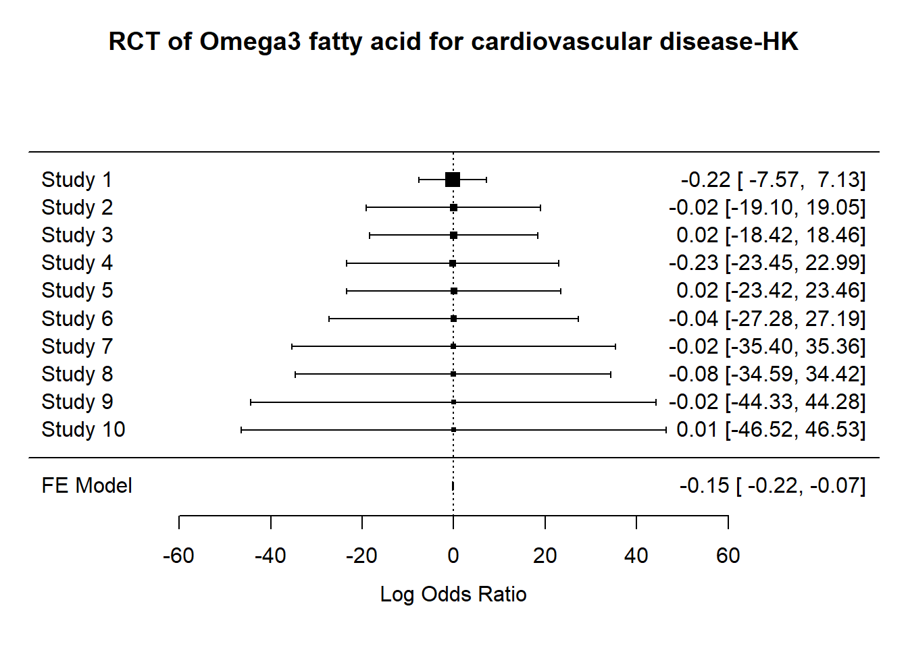
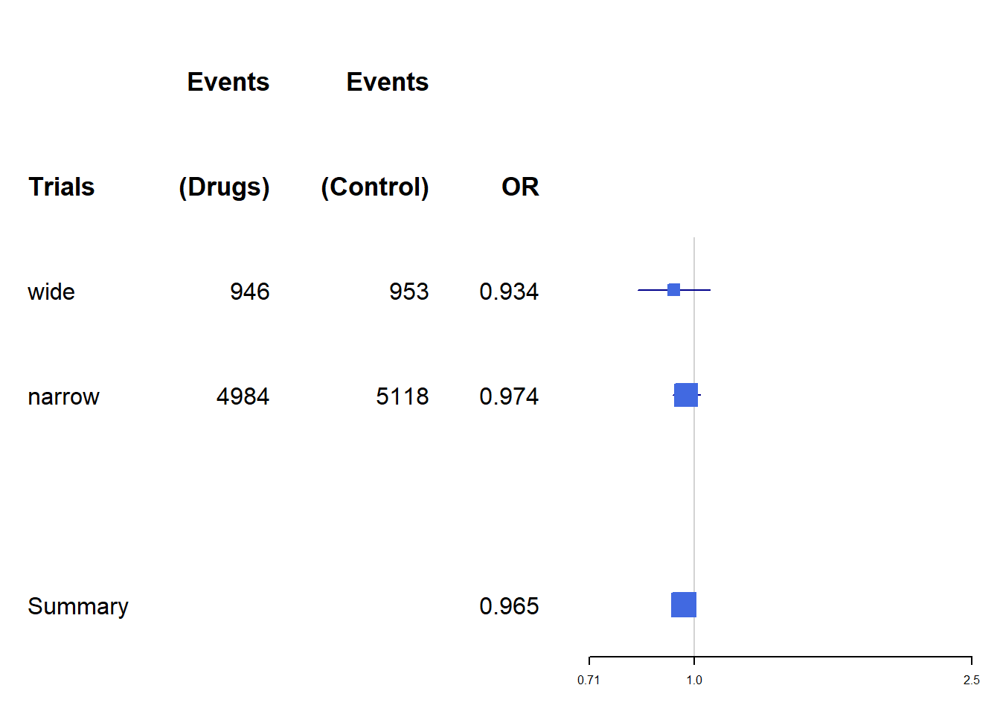

Chapter 4 Statistics
This section is not intended as a textbook on statistics. Rather it demonstrates regression approaches that can be used including sample size estimation, R codes provided.
4.1 Univariable analyses
4.1.1 Parametric tests
T-test is the workhorse for comparing if 2 datasets are have the same distribution. Performing t-test in R requires data from 2 columns: one containing the variables for comparison and one to label the group. There are different forms of t-test depending on whether the two samples are paired or unpaired. In general, the analysis takes the form of \(t=\frac{\mu_1 - \mu_2}{variance}\). It is recommended to check the distribution of the data by using histogram. For this exercise, we will use the simulated data from ECR trials. The grouping variable is the trial assignment.
#comparison of early neurological recovery (ENI) by tral (T)
dtTrial<-read.csv("./Data-Use/dtTrial_simulated.csv")
t.test(dtTrial$ENI~dtTrial$T)##
## Welch Two Sample t-test
##
## data: dtTrial$ENI by dtTrial$T
## t = 0.17454, df = 487.36, p-value = 0.8615
## alternative hypothesis: true difference in means between group 0 and group 1 is not equal to 0
## 95 percent confidence interval:
## -0.04569535 0.05460540
## sample estimates:
## mean in group 0 mean in group 1
## 0.3084644 0.30400944.1.2 Non-parametric tests
Chi-squared and Fisher-exact tests can be done by using the table function for setting up the count data into 2 x 2 contingency table or confusion matrix. The formula for the Chi-squared test takes on a familiar form \(\chi^2=\frac{(observed-expected)^2}{expected}\). In this example we will use the data above.
##
## 0 1
## 0 112 101
## 1 144 143##
## Pearson's Chi-squared test with Yates' continuity correction
##
## data: dtTrial$HT and dtTrial$T
## X-squared = 0.19553, df = 1, p-value = 0.6584The Wilcoxon rank sum test is performed with continuous data organised in the same way as the t-test. There are several different approaches to performing Wilcoxon rank sum test. The coin package allows handling of ties.
## Loading required package: survival##
## Wilcoxon rank sum test with continuity correction
##
## data: ENI by T
## W = 31159, p-value = 0.9642
## alternative hypothesis: true location shift is not equal to 04.2 Regression
There are many different form of regression methods. A key principle is that the predictors are independent of each others. This issue will be expand on in the later in the section on collinearity. Special methods are required when the predictors are collinear.
4.2.1 Brief review of matrix
A vector is has length one. A matrix is an ordered array in 2 dimensions. A tensor is an ordered array in 3 dimensions.
A matrix in which the columns are linearly related are said to be rank deficient. The rank of a given matrix is an expression of the number of linearly independent columns of that matrix. Given that row rank and column rank are equivalent, rank deficiency of a matrix is expressed as the difference between the lesser of the number of rows and columns, and the rank of the matrix. A matrix with rank of 1 is likely to be linearly related.
4.2.2 Linear (least square) regression
Least square regression uses the geometric properties of Euclidean geometry to identify the line of best. The sum of squares \(SSE\) is \(\sum(observed-expected)^2\). The \(R^2\) is a measure of the fit of the model. It is given by \(1-\frac{SS_(res)}{SS_(total)}\). Low \(R^2\) indicates a poorly fitted model and high \(R^2\) indicates excellent fitting. The assumption here is that the outcome variable is a continuous variable.
library(ggplot2)
load("./Data-Use/world_stroke.Rda")
ggplot(world_sfdf, aes(x=LifeExpectancy,y=MeanLifetimeRisk))+
geom_smooth(method="lm", aes(Group=Income, linetype=Income))+geom_point()+xlab("Life Expectancy")## `geom_smooth()` using formula = 'y ~ x'
4.2.3 Logistic regression
For outcome that are binary in nature such as yes or no, then least square regression is not appropriate. There are no close form solution for this analysis and a numerical approach using maximum likelihood approach is needed. When examining the results of logistic regression one is often enchanted by the large odds ratio. It is important to look at the metrics of model calibration (discussed below). A clue to a poorly calibrated model is the observation that the width of the confidence interval for odds ratio is wide.
#glm
data("BreastCancer",package = "mlbench")
#remove id column and column with NA to feed into iml later
BreastCancer2<-lapply(BreastCancer[,-c(1,7)], as.numeric)
BreastCancer2<-as.data.frame(BreastCancer2)
DCa<-glm(Class~., data=BreastCancer2)
summary(DCa)##
## Call:
## glm(formula = Class ~ ., data = BreastCancer2)
##
## Coefficients:
## Estimate Std. Error t value Pr(>|t|)
## (Intercept) 0.723054 0.018613 38.847 < 2e-16 ***
## Cl.thickness 0.042754 0.003992 10.709 < 2e-16 ***
## Cell.size 0.019263 0.007293 2.641 0.00845 **
## Cell.shape 0.032217 0.007016 4.592 5.22e-06 ***
## Marg.adhesion 0.021463 0.004386 4.893 1.24e-06 ***
## Epith.c.size 0.011637 0.005965 1.951 0.05148 .
## Bl.cromatin 0.035266 0.005650 6.241 7.57e-10 ***
## Normal.nucleoli 0.016928 0.004247 3.986 7.44e-05 ***
## Mitoses 0.001086 0.006048 0.180 0.85757
## ---
## Signif. codes: 0 '***' 0.001 '**' 0.01 '*' 0.05 '.' 0.1 ' ' 1
##
## (Dispersion parameter for gaussian family taken to be 0.0481263)
##
## Null deviance: 157.908 on 698 degrees of freedom
## Residual deviance: 33.207 on 690 degrees of freedom
## AIC: -126.1
##
## Number of Fisher Scoring iterations: 24.2.4 Discrimination and Calibration
A high _\(R^2\) suggests that the linear regression model is well calibrated. This metric is often not displayed but should be sought when interpreting the data.
The areas under the receiver operating characteristic curve (AUC) is used to assess how well the models discriminate between those who have the disease and those who do not have the disease of interest. An AUC of 0.5 is classified as no better than by chance; 0.8 to 0.89 provides good (excellent) discrimination, and 0.9 to 1.0 provides outstanding discrimination. This rule of thumb about interpreting AUC when reading the literature is language the authors used to describe the AUC. This test of discrimination is not synonymous with calibration. It is possible to have a model with high discrimination but poor calibration (Diamond 1992). The AUC is similar to Harrells c-index but the interpretation of difference in AUC and c-index between models is not straightforward. A difference in 0.1 of AUC correspond to the number of subject rank correctly. The c-index was originally described for survival analysis (Harrell FE Jr 1982). Harrell described the c-index (concordance index) as estimating the probability that, of two randomly chosen patients, the patient with the higher prognostic score will outlive the patient with the lower prognostic score. As such the c-index should be interpreted as the number of concordant pairs relative to the total number of comparable pairs. It has been proposed that the AUC and c-index is not appropriate for survival analysis as they do not account for the dynamic nature of the data(Longato, Vettoretti, and Di Camillo 2020). The integrated Graf score has been proposed to account for difference in the estimated event-free survival probabilities with the actual outcome (Graf E 1999).
Calibration of logistic regression model is performed using the HosmerLemeshow goodness-of-t test and the Nagelkerke generalized R2. A model is well calibrated when the HosmerLemeshow goodness-of-t test shows no difference between observed and expected outcome or P value approaching 1. A high generalized \(R^2\) value suggests a well-calibrated regression model. Running regression through the rms or PredictABEL library provide these results. The generalized \(R^2\) can be obtained manually from base R by running an intercept only model and again with covariates. It is given by \(1-\frac{L1}{L0}\).
## Loading required package: Hmisc##
## Attaching package: 'Hmisc'## The following objects are masked from 'package:base':
##
## format.pval, units## Logistic Regression Model
##
## lrm(formula = Class ~ ., data = BreastCancer2)
##
## Model Likelihood Discrimination Rank Discrim.
## Ratio Test Indexes Indexes
## Obs 699 LR chi2 759.86 R2 0.915 C 0.993
## 1 458 d.f. 8 R2(8,699)0.659 Dxy 0.986
## 2 241 Pr(> chi2) <0.0001 R2(8,473.7)0.795 gamma 0.986
## max |deriv| 8e-10 Brier 0.028 tau-a 0.446
##
## Coef S.E. Wald Z Pr(>|Z|)
## Intercept -9.9477 1.0317 -9.64 <0.0001
## Cl.thickness 0.5776 0.1190 4.85 <0.0001
## Cell.size -0.0115 0.1759 -0.07 0.9479
## Cell.shape 0.5679 0.1913 2.97 0.0030
## Marg.adhesion 0.3137 0.1004 3.13 0.0018
## Epith.c.size 0.1306 0.1406 0.93 0.3529
## Bl.cromatin 0.5800 0.1456 3.98 <0.0001
## Normal.nucleoli 0.1232 0.0987 1.25 0.2120
## Mitoses 0.6092 0.3226 1.89 0.05904.2.4.1 Measuring Improvement in Regression Models
The net reclassification improvement (NRI) and integrated discrimination improvement (IDI) have been proposed as more sensitive metrics of improvement in model discrimination.The NRI can be considered as a percentage reclassication for the risk categories and the IDI is the mean difference in predicted probabilities between 2 models (constructed from cases with disease and without disease). The NRI and IDI scores are expressed as fractions and can be converted to percentage by multiplying 100.The continuous NRI and IDI can be performed using PredictABEL [Phan et al. (2017)](Phan et al. 2016).
4.2.4.2 Shapley value
We can use ideas from game theory relating to fair distribution of prot in coalition games; the coalition (co-operative) game in this case can be interpreted as contribution of the covariates to the model. The Shapley value regression method calculates the marginal contribution of each covariate as the average of all permutations of the coalition of the covariates containing the covariate of interest minus the coalition without the covariate of interest. The advantage of this approach is that it can handle multicollinearity (relatedness) among the covariates.
The feature importance is used to assess the impact of the features on the models decision
#this section takes the output from logistic regression above.
library(iml)
X = BreastCancer2[which(names(BreastCancer2) != "Class")]
predictor = Predictor$new(DCa, data = X, y = BreastCancer2$Class)
imp = FeatureImp$new(predictor, loss = "mae")
plot(imp)
From the logistic regression above cell thickness and cromatin have the highest coefficient and lowest p value. This is the same as feature importance. By contrast the Shapley values show that cell shape and marg adhesion make the largest impact on the model when considering the contribution to the model after considering all the contribution by different coalitions.

4.2.4.3 ICE
The individual conditional expectation (ICE) curves is the plot of the expectation fof the predictive value for each observation at the unique value for the feature.
#feature is the covariate of interest
par(mfrow=c(1,2))
eff_thick <- FeatureEffect$new(predictor,
feature = "Cl.thickness",
method = "ice",
center.at = 0)
plot(eff_thick)
4.2.5 Interaction
Interactions is plotted here using lollipop bar. The ggalt library can be used to create this type of plot with geom_lollipop. The strength of interaction is measured using Friedmans H-statistics. The H-statistics ranges from 0 to 1 with 1 indicating the overall interaction strength. In the case with Breast Cancer data, the interaction strength is low.
When describing interaction terms it is recommended that the results be expressed as coefficients rather than as odds ratio.

4.3 Confounder
A confounder is a covariate that serves as a cause of both exposure and outcome and as such confound the analysis. A mediator exist on the causal pathway from exposure to outcome. A common misconception is that the multiple regression adjust for imbalance in covariates in clinical trial. This issue was observed in the pivotal NINDS alteplase trial. The results of the trial has since been accepted with re-analysis of this trial using covariate adjustment (Ingall et al. 2004).
There are several methods for covariate adjustment in radomised trials: direct adjustment, standardisation and inverse-probability-of-treatment weighting.
4.3.1 Confounder weighted model
The issue asked is whether one should choose to perform confounder analysis or propensity matching.
4.3.2 Propensity matching
Propensity matching is an important technique to adjust for imbalance in covariates between 2 arms. There are concerns with mis-use of this technique such as difference in placebo arms from multiple sclerosis trials (Signori et al. 2020). It is proposed that this technique should be used only if all the confounders are measurable. This situation may not be satisfied if the data were accrued at different period, in different continent etc.
4.3.3 E-values
The E-values (VanderWeele TJ 2017) has been proposed a measure of unmeasured confounders in observational studies. The E-value is a measure of the extent to which the confounder have on the treatmentoutcome association, conditional on the measured covariates. A large E-value is desirable. The E-values is available in Evalue library (Mathur MB 2018).
4.4 Causal inference
Causation and association are often miscontrued to be the same. However, the finding of correlation (association) does necessarily imply causation. Causal inference evaluates the response of an effect variable in the setting of change in the cause of the effect variable. There are issues with approach to analysis of causal inference. It can be performed using frequentist such as confounder weighted model or Bayesian methods such as (Baysian additive regression tree).
4.5 Special types of regression
4.5.1 Ordinal regression
Ordinal regression is appropriate when the outcome variable is in the form of ordered categorical values. For example, the Rankin scale of disability is bounded between the values of 0 and 6. This type of analysis uses the proportional odds model and the requirement for this model is stringent. When examining results of ordinal regression check that the authors provide this metric, the Brant test. The Brant test assesses the parallel regression assumption. Ordinal regression is performed using polr function in MASS library. The Brant test is available in the Brant library.
4.5.2 Survival analysis
Survival analysis is useful when dealing with time to event data. Time to event data can be left, interval and right censoring. Left censoring exists when events may have already occurred at the start of the study eg purchase of phones. Right censoring exists when events have not happened yet eg cancer trial. Interval censoring exists when an insurance has been purchased but the date of product purchase is not yet known.
The Cox model assesses the hazard of outcome between two groups. The assumption of this model is that the hazard between each arm is proportional (Stensrud and Hernan 2020). The proportional hazard model can be tested based on the weighted Schoenfeld residuals(Grambsch and Therneau 1994). There are non-parametric models available when the assumption of the proportional hazard model does not hold.
In the next chapter on machine learning, an illustration of random survival forest with rfrsc library and ranger library are provided. In the section on [clinical trial][Interpreting clinical trials] we illustrate how the results can be converted to numbers needed to treat. The median survival corresponding to survival probability of 0.50 can be determined here. Metrics for assessing survival model was described above.
## Loading required package: ggpubr##
## Attaching package: 'survminer'## The following object is masked from 'package:survival':
##
## myeloma#data from survival package on NCCTG lung cancer trial
#https://stat.ethz.ch/R-manual/R-devel/library/survival/html/lung.html
data(cancer, package="survival")
#time in is available in days
#status censored=1, dead=2
#sex:Male=1 Female=2
survfit(Surv(time, status) ~ 1, data = cancer)## Call: survfit(formula = Surv(time, status) ~ 1, data = cancer)
##
## n events median 0.95LCL 0.95UCL
## [1,] 228 165 310 285 363## Call:
## coxph(formula = Surv(time, status) ~ age + sex + ph.ecog + ph.karno +
## wt.loss, data = cancer)
##
## n= 213, number of events= 151
## (15 observations deleted due to missingness)
##
## coef exp(coef) se(coef) z Pr(>|z|)
## age 0.015157 1.015273 0.009763 1.553 0.120538
## sex -0.631422 0.531835 0.177134 -3.565 0.000364 ***
## ph.ecog 0.740204 2.096364 0.191332 3.869 0.000109 ***
## ph.karno 0.015251 1.015368 0.009797 1.557 0.119553
## wt.loss -0.009298 0.990745 0.006699 -1.388 0.165168
## ---
## Signif. codes: 0 '***' 0.001 '**' 0.01 '*' 0.05 '.' 0.1 ' ' 1
##
## exp(coef) exp(-coef) lower .95 upper .95
## age 1.0153 0.9850 0.9960 1.0349
## sex 0.5318 1.8803 0.3758 0.7526
## ph.ecog 2.0964 0.4770 1.4408 3.0502
## ph.karno 1.0154 0.9849 0.9961 1.0351
## wt.loss 0.9907 1.0093 0.9778 1.0038
##
## Concordance= 0.64 (se = 0.026 )
## Likelihood ratio test= 33.53 on 5 df, p=3e-06
## Wald test = 32.27 on 5 df, p=5e-06
## Score (logrank) test = 32.83 on 5 df, p=4e-06Test proportional hazard assumption using weighted residuals (Grambsch and Therneau 1994). The finding below shows that inclusion of covariate ph.karno violate proportional hazard assumption.
## chisq df p
## age 0.186 1 0.666
## sex 2.059 1 0.151
## ph.ecog 1.359 1 0.244
## ph.karno 4.916 1 0.027
## wt.loss 0.110 1 0.740
## GLOBAL 7.174 5 0.208Plot fit of survival model
## Warning: `gather_()` was deprecated in tidyr 1.2.0.
## Please use `gather()` instead.
## The deprecated feature was likely used in the survminer package.
## Please report the issue at <https://github.com/kassambara/survminer/issues>.
## This warning is displayed once every 8 hours.
## Call `lifecycle::last_lifecycle_warnings()` to see where this warning was
## generated.## `geom_smooth()` using formula = 'y ~ x'Forest plot of outcome from survival analysis
An alternative way to display the output from Cox regression is to use forestmodel library .

The pseudoR2 for Cox regression model proposed by Royston can be evaluated
## D se(D) R.D R.KO R.N C.GH
## 0.8546894 0.1495706 0.1484960 0.1515108 0.1459168 0.64188944.5.3 Quantile regression
Least spare regression is appropriate when the data is homoscedascity or the error term remain constant. This can be seen as the data varies around the fitted line. Homoscedascity implies that the data is homogenous. Quantile regression is appropriate when the distribution of the data is non-normal and it is more appropriate to look at the conditional median of the dependent variable. There are several libraries for this task quantreg and Bayesian libraries. In the example below, the life time risk of stroke is regressed against life expectancy using lest square and quantile regression.
library(quantreg)
library(ggplot2)
load("./Data-Use/world_stroke.Rda")
#quantile regression
rqfit <- rq( MeanLifetimeRisk~ LifeExpectancy, data = world_sfdf)
rqfit_sum<-summary(rqfit)
#least square regression
lsfit<-lm(MeanLifetimeRisk~LifeExpectancy,data=world_sfdf)
lsfit_sum<-summary(lsfit)
#plot
ggplot(world_sfdf, aes(x=LifeExpectancy,y=MeanLifetimeRisk))+
#add fitted line for least square
geom_abline(intercept =lsfit_sum$coefficients[1], slope=lsfit_sum$coefficients[2],color="red")+
#add fitted line for quantile regression
geom_point()+xlab("Life Expectancy")+
geom_abline(intercept =rqfit_sum$coefficients[1], slope=rqfit_sum$coefficients[2],color="blue")
#annotate least square and quantile at position x, y
#annotate("text",x=60, y=27, label=paste0("least square =", round(lsfit_sum$coefficients[1],2) ,"+", round(lsfit_sum$coefficients[2],2),"x ","Life Expectancy"),color="red")+ annotate("text",x=75, y=12,label=paste0("quantile =",round(rqfit_sum$coefficients[1],2), " + ", round(rqfit_sum$coefficients[2],2)," x ","Life Expectancy"),color="blue")4.5.4 Non-negative regression
In certain situations, it is necessary to constrain the analysis so that the regression coefifcients are non-negative. For example, when regressing brain regions against infarct volume, there is no reason believe that a negative coefficient attributable to a brain region is possible(Phan, Donnan, Koga, et al. 2006) . Non-negative regression can be performed in R using nnls.
4.5.5 Poisson regression
Poisson regression is used when dealing with number of event over time or distance such as number of new admissions or new cases of hepatitis or TIA over time. An assumption of the Poisson distribution is that the mean & lambda; and variance are the same.
A special case of Poisson regression is the negative binomial regression. This latter method is used when the variance is greater than the mean pf the data or over-dispersed data. Negative binomial regression can be applied to number of failure event over time. Here failure has a lose definition and can be stroke recurrence after TIA or cirrhosis after hepatitis C infection.
Zero-inflated data occurs when there is an abundance of zeroes in the data (true and excess zeroes).
4.5.6 Conditional logistic regression
Conditional logistical regression model should be used when the aim is to compare pair of objects from the same patient. Examples include left and right arms or left and right carotid arteries. This method is available from clogit in survival.
4.5.7 Multinomial modelling
Multinomial modelling is used when the outcome categorical variables are not ordered. This situation can occur when analysis involves choice outcome (choices of fruit: apple, orange or pear). In this case, the log odds of each of the categorical outcomes are analysed as a linear combination of the predictor variables. The nnet library have functions for performing this analysis.
4.6 Sample size estimation
Clinicians are often frustrated about sample size and power estimation for a study, grant or clinical trial. This aspect is scrutinised by ethics committee and in peer review process for journals. Luckily, R provides several packages for sample size amd power estimation: pwr library. Cohen has written reference textbook on this subject (Cohen 1977).
4.6.1 Proportion
library(pwr)
#ttest-d is effect size
#d = )mean group1 -mean group2)/variance
pwr.t.test(n=300,d=0.2,sig.level=.05,alternative="greater") ##
## Two-sample t test power calculation
##
## n = 300
## d = 0.2
## sig.level = 0.05
## power = 0.7886842
## alternative = greater
##
## NOTE: n is number in *each* groupWe provided an example below for generating power of clinical trial. Examples are taken from a paper on sample size estimation for phase II trials (Phan, Donnan, Davis, et al. 2006).
library(pwr)
#h is effect size. effect size of 0.5 is very large
#sample size
pwr.2p.test(h=0.5,n=50,sig.level=0.05,alternative="two.sided")##
## Difference of proportion power calculation for binomial distribution (arcsine transformation)
##
## h = 0.5
## n = 50
## sig.level = 0.05
## power = 0.705418
## alternative = two.sided
##
## NOTE: same sample sizes##
## Difference of proportion power calculation for binomial distribution (arcsine transformation)
##
## h = 0.1
## n = 50
## sig.level = 0.05
## power = 0.07909753
## alternative = two.sided
##
## NOTE: same sample sizesThe output of the sample size calculation can be put into a table or plot.
library(pwr)
#pwr.2p.test(h=0.3,n=80,sig.level=0.05,alternative="two.sided")
h <- seq(.1,.5,.1) #from 0.1 to 0.3 by 0.05
nh <- length(h) #5
p <- seq(.3,.9,.1)# power from 0.5 to 0.9 by 0.1
np <- length(p) #9
# create an empty array 9 x 5
samplesize <- array(numeric(nh*np), dim=c(nh,np))
for (i in 1:np){
for (j in 1:nh){
result <- pwr.2p.test(n = NULL, h = h[j],
#result <- pwr.r.test(n = NULL, h = h[j],
sig.level = .05, power = p[i],
alternative = "two.sided")
samplesize[j,i] <- ceiling(result$n)
}
}
samplesize## [,1] [,2] [,3] [,4] [,5] [,6] [,7]
## [1,] 412 583 769 980 1235 1570 2102
## [2,] 103 146 193 245 309 393 526
## [3,] 46 65 86 109 138 175 234
## [4,] 26 37 49 62 78 99 132
## [5,] 17 24 31 40 50 63 85#graph
xrange <- range(h)
yrange <- round(range(samplesize))
colors <- rainbow(length(p))
plot(xrange, yrange, type="n",
xlab="Effect size (h)",
ylab="Sample Size (n)" )
# add power curves
for (i in 1:np){
lines(h, samplesize[,i], type="l", lwd=2, col=colors[i])
}
# add annotation (grid lines, title, legend)
abline(v=0, h=seq(0,yrange[2],50), lty=2, col="grey89")
abline(h=0, v=seq(xrange[1],xrange[2],.02), lty=2,
col="grey89")
title("Sample Size Estimation\n Difference in Proportion")
legend("topright", title="Power", as.character(p),
fill=colors)4.6.1.1 Non-inferiority
Non-inferiority trials may offer information in a way that a traditional superiority design do not. The design may be interested in other aspect of the treatment such as cost and lower toxicity (Kaji and Lewis 2015). Examples of non-inferiority trial designs include antibiotics versus surgery for appendicitis (Salminen et al. 2015). There are concerns with reporting of noninferiority trial. Justification for the margin provided in 27.6% (Gopal et al. 2015). The following describes a trial design where its expected that drug will result in a certain outcome p1 and the control arm p2 and the ratio of subject in treatment to control arm is k. The difference in outcome is delta. The margin is defined as non-inferior if <0.
library(TrialSize)
TwoSampleProportion.NIS(alpha=.05,
beta=.8,
p1=.6,
p2=.7,
k=1,
delta = .1,
margin=-.2
)## [1] 3.2259114.6.2 Logistic regression
library(powerMediation)
library(ggplot2)
#continuous predictor
#p1=event rate
#exp(0.405) =1.5
powerLogisticCon(n=200, p1=0.265, OR=exp(0.014), alpha=0.05)## [1] 0.03056289# creating a data frame using data from
a=seq(0,05.4,0.05)
df_power<-data.frame(`ASPECTS`= a,
"Power"=powerLogisticCon(n=100, p1=a, OR=exp(.695), alpha=0.05)
)## Warning in sqrt(n * beta.star^2 * p1 * (1 - p1)): NaNs produced## Warning: Removed 88 rows containing missing values (`geom_point()`).
An alternative library to perform sample size for logistic regression is WebPower library.
## Loading required package: lme4##
## Attaching package: 'lme4'## The following object is masked from 'package:modeltools':
##
## refit## The following object is masked from 'package:nlme':
##
## lmList## The following object is masked from 'package:MatrixModels':
##
## mkRespMod## The following object is masked from 'package:generics':
##
## refit## Loading required package: lavaan## This is lavaan 0.6-15
## lavaan is FREE software! Please report any bugs.## Loading required package: PearsonDSwp.logistic(p0=0.007, #Prob (Y=1|X=0)
p1=0.012, #Prob (Y=1|X=1)
alpha=0.05,
power=0.80,
alternative="two.sided",
family="normal")## Power for logistic regression
##
## p0 p1 beta0 beta1 n alpha power
## 0.007 0.012 -4.954821 0.5440445 3336.2 0.05 0.8
##
## URL: http://psychstat.org/logistic4.6.3 Survival studies
Sample size for survival studies can be performed using powerSurvEpi or gsDesign.
library(powerSurvEpi)
#sample size
ssizeEpi.default(power = 0.80,
theta = 2,
p = 0.408 ,
psi = 0.15,
rho2 = 0.344^2,
alpha = 0.05)## [1] 512## [1] 1#Amarenco NEJM 2020 #equal sample size k=1
ssizeCT.default(power = 0.8, k = .8, pE = 0.085,
pC = 0.109,
RR = 0.78, alpha = 0.05)## nE nC
## 2417 30214.7 Randomised clinical trials
A common misconception is that the multiple regression adjust for imbalance in covariates in clinical trial. This issue was observed in the pivotal NINDS alteplase trial. The results of the trial has since been accepted with re-analysis of this trial using covariate adjustment(Ingall et al. 2004). There are several methods for covariate adjustment in radomised trials: direct adjustment, standardisation and inverse-probability-of-treatment weighting.
4.7.1 Covariate adjustment in trials
Specifically, covariate adjustment refers to adjustment of covariates available at the time of randomisation, i.e.prespecified variables and not variables after randomisation such as pneumonia post stroke trials. The advantage of covariate adjustment is that it results in narrower confidence interval as well as increase the power of the trial up to 7% (Kahan 2014). The increased power is highest when prognostic variables are used but can decrease power when non-prognostic variables are used (Kahan 2014).
4.7.2 Subgroup analysis
Subgroup analysis can be misleading especially if not specified prior to trial analysis (Wang et al. 2007). Furthermore, increasing the number of subgroup analysis will lead to increasing the chance of false positive result or multiplicity. It is important to differentiate between prespecified and posthoc analyses as posthoc analyses may be biased by examination of the data.
4.7.3 p value for interaction
The p value for interaction describe the influence by a baseline variable treatment effect on outcome in clinical trial (Wang et al. 2007). In a hypothetical trial, a significant p value for interaction between males and females for treatment effect on primary outcome indicates heterogenity of treatment effect.
## Warning: package 'Publish' was built under R version 4.3.2## Loading required package: prodlim## Registered S3 method overwritten by 'Publish':
## method from
## print.ci coin4.7.4 Interpreting risk reduction in clinical trials
A key issue in interpreting of clinical trials occurs when the relative risk reduction or relative hazard risk are provided. This issue affect the clinical interpretation of the trial finding and its application in practice. An example is the result of the ACAS asymptomatic carotid artery trial is often quoted as showing 50% risk reduction. In fact, there was 2% annual risk of ipsilateral stroke in the medical and 1% risk in the surgical arm. The absolute risk reduction or ARR was 1% per year. However, the 50% relative risk reduction is often quoted to explain to patients.
4.7.5 NNT from ARR
In this case, the number needed to treat (NNT) is given by \(\frac{1}{ARR}\) or \(\frac{1}{0.01}=100\) to achieve the trial outcome or 100 patients are needed to be treated to reduce the stroke risk to 1%. The recommendation is that the 95% confidence interval for NNT should be provided.
4.7.6 NNT from odds ratio
Calculation of NNT for odds ratio requires knowledge of the outcome of the placebo group. The NNT is given by \(\frac{1}{ACR-\frac{OR*ACR}{1-(ACR+OR*ACR)}}\). The ACR represents the assumed control risk. The NNT can be calculated from nnt function in meta library.
## Warning: package 'meta' was built under R version 4.3.2## Loading required package: metadat## Loading 'meta' package (version 7.0-0).
## Type 'help(meta)' for a brief overview.
## Readers of 'Meta-Analysis with R (Use R!)' should install
## older version of 'meta' package: https://tinyurl.com/dt4y5drs## OR p.c NNT
## 1 0.73 0.3 16.208114.7.7 NNT from risk ratio
#data from EXTEND-IV trial in NEJM 2019
#outcome 35.4% in tpa and 29.5% in control
nnt(1.44, p.c = 0.295, sm = "RR")## RR p.c NNT
## 1 1.44 0.295 -7.704164.7.8 NNT from hazard ratio
Calculation of NNT for hazard ratio requires knowledge of the outcome of the placebo group and the hazard ratio or HR. The formula using the binomial theorem is \(p=1-q\) where q is given by the ratio of outcome and numbers recruited in the placebo group. The formula is taken from (Ludwig, Darmon, and Guerci 2020) . The NNT is given \(\frac{1}{[p^{HR}-p}\) . We illustrated this using data from metaanalysis on aspirin use in stroke in Lancet 2016. There were 45 events among 16053 patients in the control group. The HR was 0.44. The NNT from this formula \(\frac{1}{.9971968^.44-.9971968}\) was 637.
4.7.9 NNT from metaananlysis
There are concerns with using NNT from the results of metaanalysis as the findings are amalgations of trials with different settings (Marx 2003) (Smeeth 1999). The caution applies when baseline risks or absolute risk differences vary across trials.
4.8 Diagnostic test
4.8.1 Sensitivity, specificity
The sensitivity of a diagnostic test is the true positive rate and the specificity is the true negative rate. Example of 2 x 2 table is provided here. As an exercise, consider a paper about a diagnostic test for peripheral vertigo reporting 100% sensitivity and 94.4% specificity. There are 114 patients, 72 patients without stroke have vertigo and positive test findings. Among patients with stroke 7 of 42 have positive test findings. The sensitivity is \(TP=\frac{TP}{TP+FN}\) and the specificity is the \(TN=\frac{TN}{TN+FP}\).
# Peripheral Vertigo
# Disease Positive Disease Negative
#$$$$$$$$$$$$$$$$$$$$$$$$$$$$$$$$$$$$$$$$$$$$$$$$$$$
# HIT Test# # $
# Positive# True Positive # False Positive $
# # 72 # 7 $
#$$$$$$$$$$$$$$$$$$$$$$$$$$$$$$$$$$$$$$$$$$$$$$$$$$$
# HIT Test# # $
# Negative# False Negative # True Negative $
# # 0 # 35 $
#$$$$$$$$$$$$$$$$$$$$$$$$$$$$$$$$$$$$$$$$$$$$$$$$$$$
# Peripheral Vertigo
#Sensitiviy=TP/(TP+FN)=100%
#Specificity=TN/(TN+FP)=83%4.8.2 AUC
The area under the receiver operating characteristics (ROC) curve or AUC is a measure of the accuracy of the test. It is recommended that ROC curve is used when there are multiple threshold. It should not be used when the test has only one threshold. Some investigators suggest caution regarding the validity of using receiver operating curve with single threshold diagnostic tests (J 2020). An AUC of 0.5 is classified as no better than by chance; 0.60.69 provides poor discrimination; 0.70.79 provides acceptable (fair) discrimination, 0.8 to 0.89 provides good (excellent) discrimination, and 0.9 to 1.0 provides outstanding discrimination.
4.8.3 Likelihood ratio
Positive likelihood ratio (PLR) is the ratio of sensitivity to false positive rate (FPR); the negative (NLR) likelihood ratio is the ratio of 1-sensitivity to specificity. A PLR indicates the likelihood that a positive spot sign (test) would be expected in a patient with ICH (target disorder) compared with the likelihood that the same result would be expected in a patient without ICH. Using the recommendation by Jaeschke et al, a high PLR (>5) and low NLR (<0.2) indicate that the test results would make moderate changes in the likelihood of hematoma growth from baseline risk. PLRs of >10 and NLRs of <0.1 would confer very large changes from baseline risk .
4.8.3.1 Fagans normogram
Fagans normogram can be conceptualised as a sliding ruler to match the disease prevalence and likelihood ratios to evaluate the impact on the post-test probability (TJ 1975). At the current disease prevalence of 23.4% and PLR 4.65, the post-test probability remains low at 0.60.
source("https://raw.githubusercontent.com/achekroud/nomogrammer/master/nomogrammer.r")
p<-nomogrammer(Prevalence = .234, Plr = 4.85, Nlr = 0.49)## Warning: Using `size` aesthetic for lines was deprecated in ggplot2 3.4.0.
## Please use `linewidth` instead.
## This warning is displayed once every 8 hours.
## Call `lifecycle::last_lifecycle_warnings()` to see where this warning was
## generated.4.8.3.2 Likelihood ratio graph
Likelihood ratio graph is a tool for comparing diagnostic tests (BJ 2000).
#plot likelihood ratio graph
LR_graph<-function (Read,sheet,Sensitivity, Specificity){
Read1<-readxl::read_xlsx(Read, sheet = sheet)
#binary data
#A=True pos %B=False positive %C=False negative %D=True negative
A=Read1$TP
B=Read1$FP
C=Read1$FN
D=Read1$TN
TPR=A/(A+C)
FPR=1-(D/(D+B))
TPR_DiagnosticTest=Sensitivity
FPR_DiagnosticTest=1-Specificity
# set plot
X=seq(0,1,by=.1)
Y=seq(0,1,by=.1)
plot(X,Y,main="Likelihood Ratio graph", xlab="1-Specificity",ylab="Sensitivity",cex=.25)
#pch describe the shape. The value 1 corresponds o
points(FPR_DiagnosticTest,TPR_DiagnosticTest,pch=8,col="blue",cex=2)
#pch describe the shape. The value 8 corresponds *
points(FPR,TPR,pch=1,col="red",cex=2) #add point
#abline(coef = c(0,1)) #add diagonal line
df1<-data.frame(c1=c(0,TPR_DiagnosticTest),c2=c(0,FPR_DiagnosticTest))
reg1<-lm(c1~c2,data=df1)
df2<-data.frame(c1=c(TPR_DiagnosticTest,1),c2=c(FPR_DiagnosticTest,1))
reg2<-lm(c1~c2,data=df2)
abline(reg1)
abline(reg2)
text(x=FPR_DiagnosticTest,y=TPR_DiagnosticTest+.3,label="Superior",cex=.7)
text(x=FPR_DiagnosticTest+.2,y=TPR_DiagnosticTest+.2,label="Absence",cex=.7)
text(x=.0125,y=TPR_DiagnosticTest-.1,label="Presence",cex=.7)
text(x=FPR_DiagnosticTest+.1,y=TPR_DiagnosticTest,label="Inferior",cex=.7)
text(x=.7,y=.2,label="Reference = Content Expert",cex=.7)
text(x=.7,y=.15, label="Diagnostic Test software", cex=.7)
}Runnning the function from above
#Sensitivity=0.623
#Specificity=1-.927
LR_graph("./Data-Use/Diagnostic_test_summary.xlsx",1,.623,.927)## New names:
## `` -> `...11`4.9 Metaanalysis
During journal club, junior doctors are often taught about the importance of metaanalysis. It is worth knowing how to perform a metaanalysis in order to critique the study. This is an important issue as the junior doctor is supervised by someone who a content expert but not necessarily a method expert. Metaanalysis can be performed for clinical trials, cohort studies or diagnostic studies. As an example, it is not well known outside of statistics journal that the bivariate analysis is the preferred method to evaluate diagnostic studies (Reitsma et al. 2005). By contrast, the majority of metaanalysis of diagnostic studies uses the univariate method of Moses and Littenberg (Moses, Shapiro, and Littenberg 1993). This issue will be expanded below.
4.9.1 Quality of study
All studies require evaluation of the quality of the individual studies. This can be done with the QUADAS2 tool, available at https://annals.org/aim/fullarticle/474994/quadas-2-revised-tool-quality-assessment-diagnostic-accuracy-studies.
4.9.2 PRISMA
The PRISMA statement is useful for understanding the search strategy and the papers removed and retained in the metaanalysis. An example of generating the statement is provided below in R. The example given here is from a paper on the use of spot sign to predict enlargment of intracerebral hemorrhage (Phan et al. 2019).
library(PRISMAstatement)
#example from Spot sign paper. Stroke 2019
prisma(found = 193,
found_other = 27,
no_dupes = 141,
screened = 141,
screen_exclusions = 3,
full_text = 138,
full_text_exclusions = 112,
qualitative = 26,
quantitative = 26,
width = 800, height = 800)#https://rich-iannone.github.io/DiagrammeR/graphviz_and_mermaid.html#attributes
library(DiagrammeR)
grViz("
digraph boxes_and_circles {
# a 'graph' statement
graph [overlap = true, fontsize = 10]
# several 'node' statements
node [shape = box,
fontname = Helvetica]
Stroke
node [shape = oval,
fixedsize = false,
color=red,
width = 0.9]
Hypertension; 'No Hypertension'
node [shape= circle,
fontcolor=red,
color=blue,
fixedsize=false]
Hypokalemia; 'No Hypokalemia'
# several 'edge' statements
edge [arrowhead=diamond]
Stroke->{Hypertension, 'No Hypertension'}
Hypertension->{Hypokalemia, 'No Hypokalemia'}
}
")## alternative
grViz("digraph flowchart {
# node definitions with substituted label text
node [fontname = Helvetica, shape = rectangle]
tab1 [label = '@@1']
tab2 [label = '@@2']
tab3 [label = '@@3']
tab4 [label = '@@4']
tab5 [label = '@@5']
# edge definitions with the node IDs
tab1 -> tab3
tab1-> tab2
#tab2->tab3
tab2 -> tab4
tab2-> tab5;
}
[1]: 'Stroke n=19'
[2]: 'Hypertension n=10'
[3]: 'No Hypertension n=9'
[4]: 'Hypokalemia n=?'
[5]: 'No Hypokalemia n=?'
")4.9.3 Conversion of median to mean
One issue with performing metaanalysis is that one paper may report mean and another report median age. The formula for the mean is given by \(\frac{a+2m+b}{4}\) where m is the median, a is the upper and b is the lower range (Wan 2014). The variance is given by \(S^2=\frac{1}{12}(\frac{(a+2m+b)^2}{4}+{(b-a)^2})\). This formula requires examination of the data such as the figure to obtain the upper and lower range. These changes are incorporated into meta libray using meatamean function (Balduzzi, Rcker, and Schwarzer 2019). More recently, investigators suggest to also consider the skewness of the data from the 5 number summary data (Shi et al. 2023). The argument method.mean in function metamean is used to specify the method for estimating the mean. In this case we chose the Luo method for illustration Luo (Luo et al. 2018). See the help page by typing question mark before metamean for more options.
library(meta)
#NIHSS data from ANGEL large core trial in NEJM 2023
metamean(q1=4,q3=20,median=16,n=230, method.mean = "Luo")## Number of observations: o = 230
##
## mean 95%-CI
## 13.1932 [11.6506; 14.7358]
##
## Details:
## - Untransformed (raw) meansHere the same data is used for the McGrath method (McGrath et al. 2020).
## Number of observations: o = 230
##
## mean 95%-CI
## 13.3333 [11.7907; 14.8759]
##
## Details:
## - Untransformed (raw) meansThe conversion from median to mean in metafor is performed using conv.fivenum function (Viechtbauer 2010). There is an update on the metafor page as well as discussion on alternate approach. The default method of this function is to use the methods by Luo (Luo et al. 2018), Wan (Wan 2014) and Shi (Shi et al. 2023)
## Loading required package: numDeriv##
## Loading the 'metafor' package (version 4.2-0). For an
## introduction to the package please type: help(metafor)##
## Attaching package: 'metafor'## The following object is masked from 'package:rms':
##
## vif# example data frame
EstMean <- data.frame(Paper=c(1:4,NA), min=c(1,2,NA,2,NA), q1=c(NA,NA,4,4,NA),
median=c(5,6,6,6,NA), q3=c(NA,NA,10,10,NA),
max=c(12,14,NA,14,NA),
mean=c(NA,NA,NA,NA,7.0), sd=c(NA,NA,NA,NA,4.2),
n=c(30,30,30,30,30))
EstMean## Paper min q1 median q3 max mean sd n
## 1 1 1 NA 5 NA 12 NA NA 30
## 2 2 2 NA 6 NA 14 NA NA 30
## 3 3 NA 4 6 10 NA NA NA 30
## 4 4 2 4 6 10 14 NA NA 30
## 5 NA NA NA NA NA NA 7 4.2 30## Paper min q1 median q3 max mean sd n
## 1 1 1 NA 5 NA 12 5.356748 2.695707 30
## 2 2 2 NA 6 NA 14 6.475664 2.940771 30
## 3 3 NA 4 6 10 NA 6.713000 4.670521 30
## 4 4 2 4 6 10 14 6.882074 3.546379 30
## 5 NA NA NA NA NA NA 7.000000 4.200000 30The estmeansd library uses quantile estimation method with qe.mean.sd function when the data available are the median and quartile ranges (McGrath et al. 2020) (McGrath et al. 2022).The approach here is to use simulation to estimate the parameters.
## Warning: package 'estmeansd' was built under R version 4.3.2#data from ANGEL large core trial in NEJM 2023
res_qe <- bc.mean.sd(q1.val = 13, med.val = 16, q3.val = 20, n = 230)
res_qe ## $est.mean
## [1] 17.00748
##
## $est.sd
## [1] 5.815726The standard error from the mean can be estimated using get_SE function.
## $est.se
## [1] 0.4922415
##
## $boot_means
## [1] 16.87991 17.14172 16.95313 16.68203 16.56053 16.86812 17.15030 16.97379
## [9] 16.71541 17.74775 16.59086 17.02446 16.80924 16.64308 16.55371 16.31588
## [17] 16.86772 17.20916 17.32541 16.52969 16.68171 17.13063 16.82962 17.15085
## [25] 15.90924 16.44482 16.78636 17.10417 16.23885 16.67869 17.03853 17.00123
## [33] 16.47368 16.40935 16.32533 16.19331 17.58570 16.88390 16.80751 15.98699
## [41] 17.21037 16.41521 16.28797 15.43386 16.43574 16.53304 16.08837 16.13372
## [49] 17.35627 16.38003 17.48651 17.72729 17.51627 17.08103 15.87308 16.37014
## [57] 17.43486 16.77427 17.35266 17.34012 17.34873 16.57619 17.88952 16.62764
## [65] 17.07991 16.84501 16.73553 16.23439 16.39875 16.33986 16.81581 16.69933
## [73] 17.24425 17.43694 17.06847 16.49872 16.90791 16.95022 16.90796 15.52966
## [81] 16.60512 16.71589 17.05658 17.08813 16.80623 16.78089 16.65833 16.91498
## [89] 16.82236 16.82052 17.28110 17.07085 15.96031 16.87352 16.47865 16.32104
## [97] 16.54299 16.73389 16.44866 16.93736 16.68199 16.49783 16.80317 16.88824
## [105] 16.69935 16.36794 16.65372 16.37717 16.63966 15.93912 16.57428 16.88056
## [113] 17.42797 17.73374 16.40135 15.85709 17.20397 17.12850 17.10718 16.43615
## [121] 16.17704 16.40656 16.57770 17.54063 16.99185 17.35517 16.71691 16.09703
## [129] 16.78836 16.74520 16.69064 16.61192 16.31707 16.02064 17.32278 17.94998
## [137] 16.31180 16.32577 16.99068 16.47566 16.71434 17.30154 17.48771 16.54302
## [145] 17.04359 16.34281 16.11862 17.21133 16.41156 17.41825 15.90379 15.50646
## [153] 16.83054 16.79934 16.89998 16.17282 17.22941 16.31834 16.74497 16.98010
## [161] 16.39968 16.88736 16.41644 16.58776 17.34845 15.87257 15.29175 16.19112
## [169] 17.48300 16.26054 17.53876 16.10222 16.92970 16.84991 17.32693 16.82909
## [177] 16.63365 16.36874 16.14510 17.39986 16.68299 17.13099 16.84867 16.34372
## [185] 16.83347 16.64242 16.34778 16.85272 16.35931 16.74208 17.70283 16.91731
## [193] 16.51928 16.88665 16.44124 17.02976 16.89352 15.97288 17.90488 16.52084
## [201] 16.20563 16.62966 16.92934 17.70356 17.04017 17.51211 16.77976 17.04703
## [209] 16.56909 17.16111 16.98166 18.02138 16.68652 16.37466 16.87533 16.35450
## [217] 17.38306 17.24799 16.68342 16.29580 17.32407 16.25117 16.92852 17.14111
## [225] 16.23510 16.13384 17.24339 16.79909 17.00126 16.36587 17.39706 17.72984
## [233] 16.40824 17.16246 16.67169 16.97313 16.79809 15.49010 17.08347 16.68527
## [241] 16.35198 16.49652 16.44849 15.86329 17.39113 17.20776 17.56743 17.15767
## [249] 17.34150 16.32621 16.75576 16.57942 15.98631 17.05275 16.72646 16.41259
## [257] 16.47029 16.20732 16.03896 17.42660 16.49803 16.67066 17.52036 15.99388
## [265] 16.62628 17.21986 17.18590 16.08943 17.00366 17.50029 16.92305 16.26708
## [273] 16.87858 16.03303 16.94293 16.74194 17.51619 16.57753 16.73977 16.72987
## [281] 16.39841 17.18172 17.66157 17.40641 16.84056 16.30871 17.03589 16.89962
## [289] 15.65132 17.47385 16.81961 16.47234 17.52289 16.55289 16.25365 17.42898
## [297] 17.04442 16.56411 16.80686 16.71901 16.22802 17.07226 17.25504 16.24341
## [305] 17.29081 16.68537 17.12916 17.22083 17.39499 16.69031 16.82688 16.42497
## [313] 16.79227 17.32457 17.38791 16.77000 16.45581 16.54349 16.93597 17.28958
## [321] 17.15059 16.02064 17.07649 17.24729 16.22791 15.80680 15.51048 17.80623
## [329] 16.76840 16.90715 17.04199 16.56112 17.57265 16.79328 16.91461 17.38446
## [337] 17.39254 16.44015 17.45458 17.14599 16.79772 16.04805 17.40295 17.51181
## [345] 16.94131 16.65040 17.06704 16.72452 16.76563 16.97706 17.61556 17.57567
## [353] 16.23489 17.23339 18.29824 16.72339 16.63724 17.34477 15.95971 16.54211
## [361] 16.57988 16.59220 16.47693 16.44076 16.65422 15.70414 16.10984 17.07187
## [369] 16.80706 16.50561 17.18617 16.57505 16.19982 16.17355 16.44421 17.42058
## [377] 17.05442 16.36647 16.59346 16.65624 17.71085 16.86168 16.43488 17.15428
## [385] 16.44247 16.87380 17.28984 17.39023 16.41721 17.10443 16.66542 16.51212
## [393] 16.21685 16.60299 17.55791 17.13347 16.80995 17.30991 16.13328 17.21066
## [401] 17.01051 17.69857 16.94820 17.21398 16.72890 17.17627 15.22767 17.19112
## [409] 16.14372 16.87111 17.03160 17.83390 16.03816 16.69603 17.27914 17.03061
## [417] 17.21915 16.21239 17.40601 16.26802 16.91524 17.49414 16.89108 16.46129
## [425] 16.98557 16.83112 16.85436 15.98952 16.77962 16.82063 15.95013 17.49366
## [433] 17.03643 16.54811 16.82167 17.00403 16.51240 16.57292 16.39142 17.76946
## [441] 16.99843 16.56160 17.17401 16.36329 16.74315 17.26123 16.73007 17.11125
## [449] 16.23886 16.97882 16.87985 16.62911 17.69756 16.29058 16.77863 16.19370
## [457] 17.08275 16.95904 17.02440 17.07470 17.86842 17.98415 16.93050 16.48963
## [465] 16.16955 17.47203 17.30934 17.44890 16.25278 16.67137 16.87242 15.05229
## [473] 16.65468 17.45136 16.94370 16.64546 17.72217 16.60261 16.27026 16.98469
## [481] 16.30494 17.52937 16.82253 16.53219 16.84974 16.35134 16.44022 16.55947
## [489] 15.69055 15.96859 16.24595 17.41190 17.38172 16.83057 16.51814 16.87211
## [497] 15.95324 16.62211 16.48372 16.94081 16.62059 17.29312 17.38138 17.58894
## [505] 16.15007 15.75786 16.77247 16.48919 16.48577 16.89330 15.80484 16.35386
## [513] 16.48174 17.15816 17.16746 16.35984 17.04358 16.44663 16.28848 16.81851
## [521] 15.86583 16.98186 16.25927 16.22421 17.37142 17.10981 16.69714 16.13643
## [529] 16.38813 17.99143 16.35375 17.07985 17.25396 17.26543 16.64836 16.81653
## [537] 16.23056 16.40519 15.89373 17.31237 16.88649 16.41227 16.45472 16.40462
## [545] 16.59258 15.84734 16.47528 17.00405 17.78683 16.73716 16.93043 17.17582
## [553] 16.70527 16.16375 17.32274 17.26580 16.22375 16.76325 16.92298 16.91512
## [561] 15.56599 17.37279 16.53090 16.71978 16.77857 16.50684 17.31566 16.07870
## [569] 16.75035 16.38249 17.21587 17.22037 15.97990 17.26654 17.66741 16.45733
## [577] 16.88949 16.33767 16.57092 17.02745 17.14469 16.71961 16.48600 16.58829
## [585] 16.91051 17.19182 16.54321 17.00703 16.45031 17.39350 16.95381 17.12100
## [593] 16.65551 15.63277 16.41044 16.91422 16.56859 16.79886 16.60576 15.62128
## [601] 16.84767 16.54522 15.91729 16.51684 17.16835 16.31146 17.18451 17.32273
## [609] 16.70219 17.22737 16.24267 16.38981 16.35911 16.56112 16.92163 15.86380
## [617] 17.06751 16.19125 16.38535 17.11663 16.82292 17.52031 17.04376 16.00606
## [625] 16.97196 16.92621 16.62872 16.83892 16.67618 16.09415 17.57126 17.08427
## [633] 16.76455 16.41358 16.42785 16.15697 16.72265 16.28260 16.59532 16.96302
## [641] 17.25748 16.56539 18.22773 16.31525 17.05694 16.97277 17.27619 16.59479
## [649] 17.23124 17.31027 15.93917 17.08656 17.15791 17.36403 17.06718 16.49816
## [657] 16.53951 16.21952 17.46236 16.65168 16.15544 17.12469 17.42262 16.02971
## [665] 16.97677 17.25450 17.04617 17.24144 17.14522 16.61433 17.10228 16.76218
## [673] 16.53843 16.47405 16.61549 16.38016 16.15869 17.05084 16.91882 16.10057
## [681] 16.66031 17.28959 16.46641 17.07065 16.62769 17.06658 16.56266 16.41304
## [689] 17.08788 16.41366 16.97903 15.99359 16.01224 16.65206 17.66052 16.13380
## [697] 16.93033 17.06070 16.93555 16.57956 16.29979 16.67922 15.91313 16.06113
## [705] 16.84581 17.29598 16.86485 16.46986 16.85729 16.03261 17.09721 16.07239
## [713] 17.08958 16.65186 16.66662 15.85242 16.72152 16.62022 16.77899 16.92257
## [721] 16.06465 16.75866 16.62102 16.43800 16.95587 16.45659 15.65606 16.11203
## [729] 16.31687 16.04183 17.10211 17.12880 17.21831 16.93981 16.71934 16.98728
## [737] 16.53434 17.05073 15.85629 16.45354 16.98680 16.75190 16.48740 17.47616
## [745] 17.43022 17.20281 16.80649 15.73073 17.10606 16.97097 16.81129 17.83472
## [753] 15.87295 16.41078 16.54458 17.46800 16.25106 16.54925 15.95605 16.34670
## [761] 16.64590 16.59660 16.60010 17.80392 16.20377 16.82048 17.15537 16.97880
## [769] 16.35405 17.30390 16.48469 16.81175 17.64186 17.04479 16.15636 17.00496
## [777] 16.44165 16.27543 17.02909 17.36870 16.52413 17.65579 16.86104 16.65968
## [785] 16.54598 16.94020 16.88723 17.08575 17.10277 17.09417 17.04056 17.16251
## [793] 16.94514 16.20736 17.01742 17.20478 16.78733 17.49479 16.14966 15.78603
## [801] 16.32881 16.04227 16.71677 16.84690 17.15130 16.37378 17.31753 17.03919
## [809] 17.19571 16.39664 16.56740 17.05338 16.10816 17.01319 16.30927 16.11106
## [817] 16.92197 16.98476 16.43461 17.57636 16.75212 16.92726 16.55920 17.43406
## [825] 16.49022 15.91023 16.18773 16.95270 16.81804 16.64584 17.69388 16.43355
## [833] 16.59227 16.31196 16.23722 17.35840 15.72771 16.87111 17.62715 16.47928
## [841] 16.04170 16.82498 16.20665 16.30235 16.80320 16.82743 17.38700 16.76637
## [849] 16.85318 16.13147 16.90041 17.62181 17.29488 16.49006 16.80080 17.16920
## [857] 17.00429 18.28410 17.33787 15.97068 16.55749 17.61199 15.71208 16.88730
## [865] 16.39312 16.78792 16.69177 16.75772 16.92669 16.27034 16.47205 17.04062
## [873] 16.08294 16.17509 16.55549 15.94336 16.50386 16.60985 17.18239 16.93504
## [881] 16.46880 16.77238 16.85659 16.10133 16.42306 16.88304 16.73729 17.67129
## [889] 17.31502 17.12053 17.08089 16.94270 16.30119 16.72189 17.29738 17.04630
## [897] 17.50370 17.48268 16.21260 16.26477 17.21324 16.31614 16.30613 16.79926
## [905] 16.29986 16.57519 16.11449 17.15316 17.04616 16.63256 16.40994 16.40852
## [913] 16.43286 16.29109 16.69818 17.28116 16.91039 17.29917 16.52164 16.33047
## [921] 17.34080 16.76860 17.04468 16.25078 16.80777 16.73393 18.10670 17.60459
## [929] 16.40734 17.47814 17.20076 16.80127 17.43414 16.32663 17.40252 17.06633
## [937] 16.89286 17.16439 17.08706 16.31340 16.18836 16.08327 16.61889 16.32467
## [945] 15.69973 17.71016 16.75805 17.06882 16.23924 16.90670 17.07088 16.62663
## [953] 16.38057 17.25635 16.68257 16.96551 17.11508 16.39960 17.11811 17.54878
## [961] 15.55910 17.57702 17.09481 17.38666 17.50850 17.01411 17.12127 16.40903
## [969] 17.37305 16.28045 17.20544 16.48296 16.90122 16.06669 17.04376 16.42973
## [977] 16.83231 16.46925 16.05954 16.56033 16.30462 17.08817 17.15602 16.36573
## [985] 16.86706 16.22933 17.70380 17.37077 16.41941 17.83869 16.85072 16.13855
## [993] 16.55412 16.72485 15.67776 16.33078 16.32285 17.06626 16.46504 16.48885
##
## $boot_sds
## [1] 4.874567 5.757825 5.798850 5.579564 4.837042 5.510946 5.299448 5.661303
## [9] 5.066487 6.309862 4.490566 5.179907 5.521354 5.710071 4.886281 4.831200
## [17] 5.903522 5.982525 6.242225 5.009345 4.536642 5.664716 6.049515 5.896180
## [25] 4.825721 4.643020 5.922572 5.882185 5.787816 6.094377 5.072456 5.819899
## [33] 4.821493 4.954602 4.399490 4.872088 6.323662 5.627914 4.704601 5.252226
## [41] 6.088492 5.278759 4.764711 4.692564 5.617238 5.280933 4.862509 4.151461
## [49] 6.281021 4.809423 6.029984 5.629173 6.581683 5.888235 5.056050 5.818303
## [57] 5.764461 5.267626 5.534876 5.339616 5.513888 5.384673 5.816247 5.433861
## [65] 4.997564 5.094475 5.066723 5.365937 4.606440 5.435217 6.092363 6.391354
## [73] 6.063768 5.889917 5.826564 4.993000 4.998288 5.819401 5.978363 4.260472
## [81] 5.495624 5.080239 5.770891 5.584043 5.110279 5.814895 5.033142 5.232987
## [89] 6.292681 4.896365 6.247258 5.842841 4.944989 5.522372 4.839530 4.627021
## [97] 5.628671 5.169646 4.415902 5.789836 5.094985 5.551361 5.515150 5.800960
## [105] 5.107903 5.211927 5.526450 5.194303 5.086164 4.427109 5.220777 5.519826
## [113] 6.984259 6.287459 4.511131 5.435463 6.198389 5.663391 5.542592 4.837507
## [121] 4.572497 5.321994 5.497830 6.886156 5.863157 5.573420 5.680133 5.562968
## [129] 6.329074 4.959501 4.779121 5.256072 5.256931 3.997301 5.653780 6.346206
## [137] 4.495483 5.133261 5.687339 5.192791 4.835188 6.167942 6.039971 4.791529
## [145] 5.963458 4.473765 5.468344 6.129869 6.011211 6.480877 4.189664 4.448638
## [153] 4.933106 4.876879 5.895590 5.130751 5.515116 5.683391 5.663397 5.966722
## [161] 5.454324 5.579044 5.205760 4.920753 5.543737 4.292067 3.865701 5.084997
## [169] 5.801373 5.248456 5.236404 5.806805 5.391924 5.947378 6.425782 5.399236
## [177] 5.242203 5.284926 5.801341 6.157593 5.898725 6.420065 5.431204 5.205909
## [185] 5.971636 5.379171 5.246766 5.381145 4.739833 5.546062 6.968542 5.784778
## [193] 5.206222 5.629549 5.368781 5.377875 5.581098 5.180280 6.621297 5.163763
## [201] 5.860362 5.903562 4.849922 5.691922 5.027341 5.472443 5.606328 6.111772
## [209] 5.902739 6.576784 5.839121 6.092340 5.514086 5.250860 5.884552 4.875404
## [217] 5.491499 5.761231 5.506463 5.534828 7.026293 4.794215 5.316137 5.766731
## [225] 5.489454 4.566711 6.089784 5.469145 6.066453 4.358110 6.383306 6.396468
## [233] 5.072137 5.595634 4.984086 4.844598 5.592377 4.264796 5.811202 4.761005
## [241] 5.585006 4.976279 4.711174 4.713530 6.439092 6.148795 6.732650 5.162336
## [249] 5.885276 5.337432 5.440326 5.030718 4.529654 6.416849 5.099141 4.619212
## [257] 5.897976 5.251253 5.167407 5.908584 5.024638 5.417052 5.127333 4.896236
## [265] 5.372170 5.707399 6.349103 4.940506 6.187279 5.742451 5.686291 5.173519
## [273] 5.472531 4.909772 5.057094 5.344071 6.201064 5.140191 4.857812 5.448280
## [281] 4.835003 5.425509 6.572678 6.827760 5.294649 5.274360 5.921958 6.249563
## [289] 4.645454 6.203397 5.066421 5.566833 6.241360 6.009171 4.961146 5.849082
## [297] 5.785381 4.724654 5.798987 6.015758 5.263111 5.756759 5.359673 4.686271
## [305] 5.463763 5.490597 5.576047 5.714999 5.181645 5.532101 5.943637 4.726255
## [313] 5.285392 6.719080 5.947825 5.404830 4.988587 5.546418 5.607591 5.719317
## [321] 6.414063 5.678328 5.472118 5.250666 5.399082 5.193374 4.458546 5.793345
## [329] 5.701644 4.619932 5.843841 4.727099 5.758692 4.880823 5.302765 5.716671
## [337] 5.950475 4.571906 5.532681 4.922895 4.885262 5.263746 6.127202 6.147126
## [345] 4.608814 5.394590 5.532225 5.106726 5.243187 6.025851 6.079016 5.241054
## [353] 5.420350 6.516130 7.945566 6.556123 4.362839 5.293383 5.120601 4.732115
## [361] 5.086212 5.631777 4.643302 4.410964 5.078038 5.295302 5.143124 5.139441
## [369] 6.080852 4.874714 6.067300 4.065789 5.483062 4.919991 5.234386 6.939604
## [377] 5.553989 5.065618 5.519067 5.276604 5.738654 5.752637 5.240027 6.202187
## [385] 5.481007 5.269649 6.069157 5.671802 5.261816 5.947621 4.764603 4.777210
## [393] 5.260427 5.527682 6.190689 5.237907 4.916895 5.641633 5.418912 5.728421
## [401] 5.170443 6.616052 5.533259 4.761889 5.796896 5.871390 4.756562 5.664581
## [409] 5.260483 5.660177 5.879956 6.007966 5.555295 5.373302 6.224796 5.374951
## [417] 5.920587 4.878901 5.460109 4.882724 5.777124 5.948925 5.205052 4.591816
## [425] 5.183100 5.190715 4.623030 5.346435 6.376312 5.221113 5.341994 5.167709
## [433] 5.151976 4.839467 5.283574 5.520714 5.098918 6.005359 3.965708 5.756529
## [441] 5.404472 4.787874 5.776304 5.878387 5.365079 5.846969 4.658432 5.244922
## [449] 5.190223 6.264669 5.699683 5.149288 6.561952 5.001373 6.412450 5.171754
## [457] 5.807964 5.846614 5.146042 5.424207 6.723431 6.141727 6.295082 4.643342
## [465] 4.658383 5.976286 6.241591 6.409863 4.586566 5.194962 5.850967 4.824035
## [473] 5.413032 6.788218 5.840986 5.212189 6.131060 4.575701 5.009801 5.435975
## [481] 4.835846 5.737226 5.004942 5.361660 5.651933 5.588312 5.038269 5.226660
## [489] 4.121846 4.070128 5.316803 4.929256 5.279664 4.889397 5.064819 5.933879
## [497] 4.995964 4.680865 5.837408 6.671949 5.503480 5.760588 7.094739 5.179235
## [505] 4.966262 4.757663 5.503130 5.462815 5.071512 5.801009 4.979750 5.121682
## [513] 5.022853 5.252318 6.188775 4.891185 5.567481 5.716421 4.626707 5.128540
## [521] 5.111964 5.454439 4.507011 4.767176 5.542209 5.786555 5.551845 5.226920
## [529] 5.260378 6.902432 5.475864 5.751474 5.940250 5.280735 5.683472 5.077053
## [537] 4.952054 5.486158 4.792536 6.418158 5.103073 5.944075 4.785341 5.043028
## [545] 4.709338 4.638518 4.868111 5.685296 5.888556 5.355625 6.271266 5.247733
## [553] 5.266305 5.107490 5.625029 7.234436 4.777347 5.819880 5.562890 5.435479
## [561] 5.123548 6.206895 5.961251 4.891632 6.000269 5.671626 5.295827 5.214524
## [569] 5.370869 4.540082 5.593552 5.740503 4.863701 6.902243 6.347857 5.061907
## [577] 5.672374 4.650674 4.874149 5.903546 5.266227 5.618434 5.361148 5.499952
## [585] 5.693439 6.410182 5.526016 5.508927 4.971833 5.726052 5.488161 6.219140
## [593] 5.493889 4.665196 5.035545 5.602201 5.212063 5.018762 5.670414 4.162507
## [601] 6.011278 4.900377 4.603472 5.686442 5.354058 5.410059 5.709937 5.796016
## [609] 5.387224 5.936832 5.373904 4.529471 5.601805 5.305234 5.673229 5.158868
## [617] 5.367547 5.001507 5.590907 5.430657 5.555753 5.988805 5.301858 4.815989
## [625] 5.383035 6.085534 5.120310 5.304489 5.956395 3.579187 5.891133 5.307083
## [633] 5.443032 5.672825 4.637375 4.780737 5.781056 4.487317 4.262838 5.427921
## [641] 5.424658 5.163032 6.300263 5.717261 5.447621 5.952790 4.818815 4.397791
## [649] 6.381714 5.684867 4.469703 5.634629 5.964364 5.748772 5.891967 5.009820
## [657] 5.426365 5.247214 5.633066 5.651742 5.176228 5.431066 5.111630 4.565161
## [665] 5.602629 5.727935 5.809191 5.396446 5.790623 5.624940 5.856217 4.486707
## [673] 4.757674 5.012668 5.309347 5.397851 4.759618 5.784991 5.712880 5.132890
## [681] 5.229721 6.702414 5.101908 5.568054 5.214948 6.330832 5.205478 4.830822
## [689] 5.615862 5.475753 6.049668 5.100352 3.900679 4.356033 5.962824 4.871689
## [697] 5.555197 5.378856 5.692429 5.052398 5.413809 4.445226 4.344019 5.213036
## [705] 6.106717 6.682205 5.355962 4.652876 4.968251 4.747703 5.686069 5.434950
## [713] 5.168829 5.186066 5.091901 4.180733 5.471924 5.008671 5.926059 5.908555
## [721] 4.901807 5.185738 4.558872 4.660483 5.683378 5.131470 4.482017 4.568829
## [729] 5.680741 4.708510 6.025986 5.984365 5.357327 5.536448 5.721703 4.726097
## [737] 5.532801 6.098888 3.722646 5.310640 5.104164 4.976809 5.317802 5.338484
## [745] 5.236343 6.455612 5.663635 5.161608 5.845089 4.974593 5.438681 6.876668
## [753] 4.817792 3.315140 4.873072 5.814870 4.967930 4.850109 4.138574 4.922924
## [761] 5.198885 5.748966 5.148764 6.446682 4.818451 5.290010 5.508697 6.571759
## [769] 5.115438 5.575599 5.083516 4.877856 5.068673 4.996227 4.888985 4.914375
## [777] 5.238515 4.163326 5.215268 6.187013 4.646969 6.440791 5.171270 5.094878
## [785] 4.823842 5.034893 5.008424 6.031931 5.982235 4.977433 5.603284 5.595537
## [793] 5.254345 4.612176 5.700316 6.400273 5.799820 5.906568 4.933768 4.958341
## [801] 4.998022 4.954581 5.409566 5.209115 5.422821 5.316381 6.336266 5.635254
## [809] 5.515408 5.422950 5.537584 5.432891 4.832241 5.211221 5.867126 4.451743
## [817] 5.752508 5.952289 4.742938 6.544980 5.019109 6.167973 5.633369 5.764301
## [825] 4.882185 4.878336 5.370110 5.861454 4.960116 5.722629 5.549231 4.699889
## [833] 5.415016 5.067567 5.369332 6.971540 4.377176 5.243694 6.432138 4.441184
## [841] 4.592590 4.893681 5.740245 5.043458 5.405631 4.613332 5.426757 5.598836
## [849] 4.977504 4.980055 6.116715 5.717349 4.745710 4.811421 5.638872 5.424938
## [857] 5.568677 5.762271 5.246704 4.835348 5.585006 6.036143 5.426533 5.145090
## [865] 5.886113 5.615395 5.283256 5.548187 4.963703 4.087169 4.975652 6.697531
## [873] 5.339109 4.985061 5.852529 4.490989 5.226025 5.861954 6.375595 5.213533
## [881] 5.830324 5.629258 5.584000 5.017956 5.834020 5.124882 4.790239 6.636782
## [889] 5.316947 6.161024 5.142324 5.450868 4.861863 4.889334 5.635858 5.670831
## [897] 5.765890 5.705158 5.263384 4.562458 6.058547 4.752733 5.021986 4.850287
## [905] 5.366643 5.803272 4.646130 6.437402 5.218980 5.396531 4.771340 4.882006
## [913] 5.388870 4.879203 4.958500 6.788177 5.227743 5.616885 4.882695 4.733517
## [921] 5.845980 5.403850 6.069242 5.329533 5.299518 4.602808 6.558455 6.765202
## [929] 4.960033 5.309739 5.898303 4.942026 6.484997 5.059107 6.296770 5.761959
## [937] 4.776026 5.866703 6.041855 5.261106 5.536236 4.473481 4.861571 5.250115
## [945] 4.531515 6.771871 4.853488 5.037365 5.108538 6.159046 5.667668 5.300866
## [953] 5.667772 5.104881 5.654132 6.295258 5.165107 5.455285 5.737052 5.264372
## [961] 4.908671 6.030500 5.190545 5.870104 6.289020 6.350722 5.164475 4.857609
## [969] 6.419195 4.912821 6.373941 4.451860 4.800616 5.310352 5.574221 4.946962
## [977] 6.131580 5.416962 4.540015 4.581594 5.070912 5.658708 5.305138 5.176563
## [985] 5.434906 4.621621 5.864920 5.186555 5.900767 6.086884 5.353773 4.954226
## [993] 5.069338 4.828878 4.355551 5.148454 4.310202 4.946036 5.048387 5.176745The estmeansd library uses Box-Cox method for estimating mean and sd when the data available are the median, minimum and maximum values.
## $est.mean
## [1] 16.69497
##
## $est.sd
## [1] 3.508168Again, the standard error from the mean can be estimated using get_SE function.
## $est.se
## [1] 0.3024458
##
## $boot_means
## [1] 17.36607 16.74149 16.41749 16.75205 16.75348 16.37918 16.77575 16.59997
## [9] 17.10559 16.66127 16.79816 16.45489 16.88438 17.05422 17.07187 17.30018
## [17] 16.88029 16.65236 16.21984 16.43727 16.64165 16.48997 16.52584 16.66691
## [25] 16.64180 16.68669 16.75312 16.74339 16.91598 16.89176 16.81231 16.64271
## [33] 16.76737 17.46485 16.70770 17.08332 16.96156 17.19373 16.82255 16.65268
## [41] 16.49374 16.15405 16.59963 17.04170 16.90302 16.52480 16.79836 16.59813
## [49] 17.50338 16.65237 16.40120 16.98575 16.29716 16.90254 17.14909 16.80582
## [57] 16.36568 17.26195 16.63182 17.13461 16.84823 16.84466 16.34991 16.88521
## [65] 16.52407 17.15732 17.05846 16.66128 16.86640 17.00639 17.34647 16.78309
## [73] 16.72167 17.30673 17.19062 17.06750 16.61692 17.00016 17.04413 16.89705
## [81] 17.06844 16.23978 16.93614 17.17376 16.63467 16.64716 16.82392 16.81333
## [89] 16.60338 16.61266 16.55309 16.63412 17.64190 17.01466 16.64512 17.38707
## [97] 16.36157 16.33143 16.81267 16.66639 16.60983 16.93266 16.61014 16.88798
## [105] 16.68881 16.67473 16.70643 16.58332 16.95560 17.22986 16.41215 16.71773
## [113] 16.80010 16.37261 16.63634 16.97703 16.72410 16.38229 17.08198 17.03817
## [121] 16.99558 16.20164 16.63613 16.83371 16.70834 16.99216 16.40231 16.53236
## [129] 16.86027 16.97845 16.59602 16.85344 16.71170 16.47347 16.78683 16.96574
## [137] 16.59059 16.43464 16.74973 17.41242 16.46977 16.85526 16.51147 17.03533
## [145] 16.89966 16.40706 17.13667 17.09296 16.79604 16.98555 16.78237 17.12696
## [153] 17.31764 16.79490 16.95697 16.58749 16.92284 16.92197 16.78468 16.52205
## [161] 16.59477 16.01431 16.54826 16.55542 16.80327 16.69345 16.21527 16.88307
## [169] 17.11683 17.22887 16.55613 17.23226 16.40735 17.24563 16.63420 17.04051
## [177] 16.71892 16.86676 16.70212 16.66587 16.61722 16.45562 16.69346 16.55564
## [185] 16.66068 16.10769 16.79463 17.00242 17.00656 16.68638 16.71073 16.84451
## [193] 16.47947 17.05716 17.23949 16.17294 16.65624 16.49400 16.28834 16.40865
## [201] 16.28071 16.83512 16.55279 16.77555 16.67633 17.07645 16.30175 17.23207
## [209] 16.73161 16.30761 16.76629 17.02264 16.24045 16.76047 17.26376 16.50211
## [217] 16.72949 16.87409 16.41916 17.07704 16.37262 17.16258 16.97011 17.30955
## [225] 16.46806 16.53978 16.84833 16.79415 17.30022 16.82767 16.59682 16.34403
## [233] 16.71317 17.11467 17.09538 16.70136 16.69578 17.03659 16.88730 16.20128
## [241] 16.70935 17.01553 16.95379 16.80905 16.26677 16.39111 16.39725 17.32640
## [249] 16.71852 16.62978 16.28605 16.58338 16.91685 16.65868 16.55696 16.77947
## [257] 16.65965 16.95895 16.59242 16.89810 16.62804 16.35850 16.10097 16.66932
## [265] 16.71704 16.81717 16.72876 16.97030 16.55392 16.76215 16.97886 16.61411
## [273] 16.78579 16.61812 16.93998 16.72546 16.69263 16.72578 17.00453 16.44603
## [281] 16.73718 16.57815 16.34314 16.28318 16.25611 16.18927 17.00747 16.29259
## [289] 16.55947 16.68824 16.16102 16.71529 16.68784 16.72167 16.30725 16.84108
## [297] 16.80984 16.66335 16.83903 16.73371 16.71490 16.59109 16.46449 16.52623
## [305] 16.59872 16.87694 16.67588 16.61258 16.91432 16.86191 16.53611 16.57640
## [313] 16.86089 17.84259 16.19356 16.72176 17.28123 16.68206 17.31126 16.59279
## [321] 16.41871 16.27068 16.40251 16.88169 16.50186 16.59610 16.93961 17.22119
## [329] 16.21868 16.71414 16.37193 16.78917 16.26077 16.51254 16.54015 16.23659
## [337] 16.85542 17.01417 16.60426 17.49256 16.85817 15.87799 16.50544 16.49200
## [345] 16.17577 16.77579 17.04011 16.64282 16.99526 16.28235 16.83343 16.75518
## [353] 17.61580 16.05996 16.68990 16.77094 16.08910 16.65044 17.00878 16.63802
## [361] 16.58022 16.76859 16.45534 16.56787 17.21286 16.62327 16.90604 17.08023
## [369] 16.75400 16.94542 16.92827 17.25565 17.09193 17.09992 17.09863 17.00194
## [377] 16.40200 16.41983 16.61827 17.06384 16.66018 17.12787 16.75039 16.87816
## [385] 16.59067 16.24118 16.95473 16.55289 16.60809 16.88940 16.75253 16.80080
## [393] 16.81599 17.03450 16.77324 16.56444 16.59023 17.22136 16.57525 17.05346
## [401] 17.01483 16.84759 16.88808 16.41303 17.29835 16.92600 17.02559 16.59125
## [409] 16.32885 17.12718 16.50144 16.70249 16.60760 16.76094 16.91339 16.80023
## [417] 16.81584 16.85119 17.03262 16.44218 16.69821 16.59300 16.83672 16.27104
## [425] 16.91168 16.59411 16.22562 16.71425 17.01446 16.33442 16.17419 16.25635
## [433] 16.41197 16.92814 16.07313 16.12464 16.60584 16.63332 16.83736 16.89302
## [441] 16.81162 16.68316 16.86362 16.55647 17.07408 16.54325 17.19544 16.40973
## [449] 16.88123 17.08277 16.50374 17.27928 16.63491 16.64445 16.97887 16.64417
## [457] 16.69263 16.71387 17.01602 16.78453 16.73212 16.73593 16.63712 16.83951
## [465] 16.51050 16.41318 17.17622 16.25079 16.98468 16.97880 16.92672 17.15352
## [473] 16.47943 16.50768 16.69714 16.79859 16.11701 16.75491 16.65215 16.76789
## [481] 16.70554 16.67514 16.69458 16.65544 16.70657 16.65282 16.48443 17.35728
## [489] 16.57373 17.24326 17.14891 16.68258 17.17579 17.20306 16.59625 16.77253
## [497] 16.07814 16.75418 16.79115 15.90267 17.07363 17.13858 16.39834 16.26458
## [505] 16.47662 16.78506 17.39552 16.67940 16.66099 16.62566 16.87497 16.52903
## [513] 16.80597 16.99801 16.65066 16.65910 16.89513 16.71627 16.83529 16.55216
## [521] 16.59989 16.65849 17.02385 16.05112 16.39398 16.88492 16.67765 16.25639
## [529] 16.76052 16.89348 16.85241 16.66833 16.22403 17.28846 16.07769 16.95761
## [537] 16.60050 16.60640 16.55423 16.95301 16.80168 16.46490 16.89330 16.94388
## [545] 16.52515 16.87314 16.75632 16.99520 16.45269 16.40483 16.63251 16.49646
## [553] 17.01415 16.60268 16.20321 16.92549 16.57108 16.69264 16.73367 16.63631
## [561] 16.87760 17.02777 16.47406 16.80705 16.71191 16.77174 16.42327 16.56899
## [569] 16.82253 17.33606 16.57664 16.76487 16.51114 16.82070 16.40267 16.60904
## [577] 16.74116 16.48355 16.57405 16.98684 16.70105 16.60904 16.62383 16.97423
## [585] 16.23020 16.68348 16.62150 16.67496 16.35641 16.39460 16.80331 16.87390
## [593] 16.92531 16.91200 16.71949 16.39160 16.97110 17.20308 16.83710 16.57259
## [601] 16.83163 16.63540 16.60085 17.71302 16.70798 16.39533 16.53946 16.65497
## [609] 16.80837 16.38163 17.20108 16.96141 16.38836 17.10643 16.31885 16.38517
## [617] 16.35033 16.75158 17.42521 17.08041 16.87646 16.43208 17.14905 16.34062
## [625] 16.73599 17.06982 16.83382 16.96344 17.06448 17.10248 16.64179 16.56899
## [633] 16.77098 16.64807 16.82623 16.39178 16.86667 16.78259 16.99598 16.80414
## [641] 16.84859 17.24667 16.38051 16.92461 16.92051 17.03055 17.83377 16.64802
## [649] 16.77590 16.99701 17.28891 16.21180 16.38275 16.78668 16.51901 16.66771
## [657] 16.74065 16.68705 16.66778 16.42967 16.70844 16.65395 17.15536 17.11924
## [665] 16.04981 17.02122 16.54325 16.96514 17.01524 17.47231 16.61990 17.42054
## [673] 16.43147 16.90652 16.84097 16.53064 16.28990 16.70392 16.63326 16.85592
## [681] 17.07752 17.23452 16.80218 16.84454 16.89241 17.01343 16.52011 16.86875
## [689] 16.18416 16.39614 17.25420 17.07773 16.66778 16.71658 16.96418 16.56639
## [697] 16.83508 16.80952 16.42297 16.62805 16.65026 16.87081 17.61714 17.00172
## [705] 16.52286 16.58778 16.45661 17.37695 16.80399 16.39718 16.42079 16.55643
## [713] 16.40764 16.56022 17.12973 16.42825 16.62397 17.02047 16.43572 16.77054
## [721] 16.80264 16.43458 17.05546 16.35745 17.19951 16.88610 17.03402 17.14859
## [729] 16.81058 17.06377 17.06594 17.02620 16.62986 17.38639 16.63297 17.38767
## [737] 17.48528 16.83141 16.08947 16.71413 16.59091 16.79910 16.32474 16.50160
## [745] 16.56072 16.47072 17.17311 16.61576 16.62859 17.06919 16.57516 16.69736
## [753] 16.52515 16.22763 16.61281 16.88553 16.49968 16.73486 16.17686 16.60769
## [761] 16.68033 16.71056 16.31115 16.69110 16.78118 16.67138 16.69876 16.34645
## [769] 17.05728 16.39028 16.75684 16.37446 16.61944 17.24401 17.05488 16.88258
## [777] 16.45085 16.82439 17.01220 16.52795 17.47845 16.80583 16.50282 16.74356
## [785] 16.38963 16.45711 16.98880 16.37536 16.62648 17.14105 16.54117 16.41150
## [793] 16.13320 17.30475 16.59104 16.32556 16.25796 17.25612 16.42516 17.16570
## [801] 17.13264 16.75008 17.03855 16.91343 16.59156 17.37614 17.44891 16.81343
## [809] 15.99570 16.87299 17.09111 16.43018 16.82263 16.66184 16.55839 16.97417
## [817] 16.62530 16.72296 17.29899 16.58172 16.38729 16.51976 16.77925 16.81301
## [825] 16.52946 16.23383 16.96071 16.73090 16.96582 16.64609 16.99048 17.06495
## [833] 16.73506 16.92431 16.82313 16.68345 16.53333 17.31305 16.25674 16.54747
## [841] 16.71225 17.00516 16.26246 16.56877 16.54589 16.57282 16.42195 15.95083
## [849] 16.64332 16.47126 16.74813 16.75765 16.73766 16.85146 16.51516 17.06498
## [857] 16.66164 16.91832 16.39920 16.66433 16.81114 16.76290 17.08800 17.00541
## [865] 16.88682 16.83234 16.64009 16.38066 16.56680 16.60115 16.55773 16.56748
## [873] 16.41978 17.09799 16.60889 16.20535 16.96272 17.23620 17.26855 16.80841
## [881] 16.55986 17.03594 16.41207 16.42693 16.55611 16.92224 17.03839 16.15071
## [889] 16.30577 16.45797 16.90452 16.82653 16.96902 17.02365 16.53589 16.86978
## [897] 17.13948 16.58097 16.48820 16.63546 17.12599 16.34539 16.47557 17.26121
## [905] 17.01301 16.57977 16.87141 17.13336 16.33788 16.80113 17.08565 16.52584
## [913] 16.55744 16.74898 16.08659 16.60457 17.06956 17.26090 16.65410 16.52493
## [921] 17.03760 17.31896 16.75444 16.72565 17.36681 16.46049 16.49972 16.71872
## [929] 16.43184 16.21160 16.51045 17.08008 16.78666 16.71053 16.49637 16.58165
## [937] 17.15449 16.46055 16.35556 16.75700 16.92887 16.15625 16.33778 16.45739
## [945] 16.48740 16.95567 16.74862 16.95577 16.76966 16.84096 16.90300 17.28110
## [953] 17.05809 16.80973 17.00068 16.34872 16.59209 17.04524 16.35475 16.86838
## [961] 16.60832 16.53124 16.39313 16.70740 16.49096 17.01372 16.89396 17.17760
## [969] 16.97321 16.76018 16.54103 16.10683 16.71876 16.42297 16.13400 16.48293
## [977] 16.32871 16.95502 16.51840 16.91439 16.37330 16.89111 16.55954 16.59112
## [985] 16.24343 16.69545 16.17599 17.34101 16.87438 16.77811 16.98047 16.34944
## [993] 16.34609 16.92248 16.91035 16.49149 16.86530 16.63098 17.11160 16.71236
##
## $boot_sds
## [1] 3.964575 3.826417 3.069833 3.527496 3.935949 3.038042 3.009586 3.459169
## [9] 3.905040 3.858553 3.824111 3.573439 3.597026 3.897675 4.039339 3.980896
## [17] 3.773259 3.317552 3.299832 3.420414 3.666531 3.704380 3.318356 3.638655
## [25] 3.348041 3.974383 3.791131 3.534340 3.636163 3.085159 3.545801 3.258296
## [33] 3.551928 4.069434 3.851294 3.534854 3.453003 3.620079 3.245007 3.471350
## [41] 3.072136 3.611344 3.641047 3.996070 3.153218 3.076456 3.308234 3.600275
## [49] 4.595433 3.479378 3.277869 3.996848 3.165449 3.253488 4.260961 3.735433
## [57] 3.448481 3.558688 3.332423 3.735475 3.766021 3.218984 3.644237 3.936918
## [65] 3.022704 3.426259 3.779020 3.422524 3.762437 4.023112 3.332035 3.857229
## [73] 3.519049 4.050777 3.673196 3.783636 4.138379 4.473704 2.918614 4.127534
## [81] 3.543498 3.162184 4.254752 3.095234 3.906481 3.823041 3.639274 4.045194
## [89] 2.966333 3.976307 3.152816 3.195107 4.725679 3.892126 2.899154 3.538697
## [97] 3.347023 3.024112 3.253087 3.534549 3.490049 3.394088 3.112289 3.973098
## [105] 3.077510 3.128363 3.436676 3.651667 3.375031 4.103268 3.546323 3.773640
## [113] 4.112709 3.524887 3.247119 3.790043 3.133115 3.517168 3.536028 3.353580
## [121] 3.450671 3.095549 3.248226 3.761039 3.229415 3.732227 3.380312 3.118768
## [129] 3.735060 3.854980 3.193225 4.578086 3.323035 3.452242 4.211788 3.342866
## [137] 3.545377 3.331393 2.968800 3.583722 2.885201 3.071777 3.775374 4.065215
## [145] 3.404138 3.312804 3.185645 3.482591 3.549950 3.157060 3.679448 3.771368
## [153] 3.433983 4.214125 3.260438 3.326617 3.043668 2.889794 3.676822 3.178135
## [161] 3.754827 3.622149 4.779344 3.433719 3.517542 3.444307 3.452309 3.523891
## [169] 3.570756 3.238913 3.258961 3.176940 4.035357 3.937313 3.548986 2.730851
## [177] 3.348235 2.860024 3.199143 3.591047 4.079093 3.212677 3.762847 3.156641
## [185] 2.743385 2.809739 3.274921 3.405832 3.705300 3.072009 3.520416 3.319889
## [193] 3.175180 3.341913 3.916281 2.917440 3.330344 3.377347 3.855452 3.069780
## [201] 3.171783 3.749749 3.482123 3.417071 3.290929 3.232936 4.066132 3.268885
## [209] 3.329290 2.942937 3.052649 3.408325 3.790903 3.558008 3.117080 3.663184
## [217] 2.660728 3.680367 3.166554 3.720728 3.139043 3.291162 3.197283 3.217717
## [225] 4.101354 3.396988 3.412841 3.395137 3.943672 3.677259 3.762632 3.880164
## [233] 3.191403 4.183089 4.318079 3.216173 3.831657 3.430960 3.456240 3.311962
## [241] 3.382110 4.350560 4.647922 3.876811 3.218063 3.396399 3.346798 3.542077
## [249] 3.340225 3.099966 3.539542 3.901789 3.697919 3.574091 3.884491 3.087476
## [257] 3.213892 4.817689 3.705627 3.345009 3.866922 3.477636 3.037931 3.711622
## [265] 3.984396 3.212282 3.556516 3.657564 3.490876 3.385835 3.368994 3.485640
## [273] 3.638030 3.573608 3.216711 3.849462 3.796144 3.503518 3.866444 3.005610
## [281] 3.229872 3.001456 3.827667 3.107915 3.672102 3.236885 3.526654 3.507107
## [289] 3.891519 3.312101 2.880277 3.994591 3.659160 3.323354 3.022297 3.594686
## [297] 3.926580 3.199613 3.881998 3.631927 4.251354 3.617389 3.137944 3.101658
## [305] 4.372173 3.875819 4.021414 3.505225 4.542376 3.783777 3.153395 3.547393
## [313] 3.101882 4.350337 3.154084 3.722902 4.178912 3.590373 4.017827 3.375540
## [321] 3.663712 3.128086 3.671756 3.457307 3.160706 3.542908 3.697623 3.422158
## [329] 3.019872 3.380846 3.166800 3.345752 2.958339 3.066553 3.164405 3.063389
## [337] 3.512818 3.921587 3.049743 4.515055 3.691266 2.773802 3.559562 3.581181
## [345] 3.175735 3.875324 4.216108 3.718131 3.332551 3.381152 3.201160 3.503898
## [353] 4.344451 3.380462 3.716407 3.894983 4.053011 3.580841 3.159021 3.998027
## [361] 3.291775 3.491019 3.496069 3.425957 4.427176 3.447291 3.400110 4.656254
## [369] 3.740108 4.095409 4.245822 4.248288 3.043618 3.245610 3.489374 3.758460
## [377] 3.994726 3.451763 3.451764 3.275167 3.768322 3.490215 3.410971 3.516769
## [385] 3.272475 3.163585 3.687926 3.906227 3.964743 3.635024 3.119409 3.420167
## [393] 3.268393 3.935523 2.930094 3.296097 3.206907 3.761208 2.591798 3.950539
## [401] 3.689995 3.142142 3.410444 3.323090 4.224638 3.893966 3.426535 3.392612
## [409] 3.596040 3.720394 3.232502 3.632984 3.521353 4.034652 3.950186 3.751873
## [417] 3.114762 3.380075 4.564714 2.835575 3.223686 3.244070 3.123380 3.100333
## [425] 3.583256 3.165480 3.137335 2.946416 3.622042 3.180118 2.993693 3.559328
## [433] 3.540398 3.377574 3.540841 3.208279 3.000080 3.409782 3.501199 3.496263
## [441] 3.217303 3.947996 3.721131 3.099573 3.782698 3.199553 3.318000 3.377203
## [449] 3.775072 3.819982 3.382465 4.560405 3.681649 3.429824 3.536390 3.164676
## [457] 3.113603 3.370896 3.249054 3.949757 2.855889 3.664079 3.435292 3.236391
## [465] 3.040892 3.273879 3.759680 3.267838 3.500017 4.862152 3.990348 3.460721
## [473] 3.634304 2.605850 3.167863 3.732638 3.217893 3.606610 3.420397 3.449666
## [481] 2.729454 3.418504 4.065734 3.014804 3.357962 3.340304 3.434119 4.433051
## [489] 3.294156 3.689871 3.974755 3.250500 4.294098 3.565685 3.679240 3.534731
## [497] 2.639268 3.727261 3.957659 3.052947 3.402059 3.246991 3.605359 2.704012
## [505] 3.206336 4.133522 4.031505 3.208900 3.010972 3.902282 3.435167 4.115925
## [513] 3.543889 3.377128 3.260633 3.582537 3.482442 3.245400 3.411835 3.276139
## [521] 3.213689 2.777008 3.858297 3.071704 3.291432 3.397908 3.308306 3.297347
## [529] 2.955577 3.716195 4.114868 3.462116 3.474608 3.981126 3.939341 3.325218
## [537] 3.187548 3.748708 3.461724 3.384567 3.836600 3.464921 3.514566 3.945625
## [545] 3.185878 3.314149 3.652924 2.954899 3.461819 3.180028 4.024467 3.670847
## [553] 3.515021 3.224113 3.628995 3.773571 2.796324 3.131542 3.155287 3.032456
## [561] 3.293708 4.410185 3.590078 3.538845 3.263855 3.352054 3.188778 3.360273
## [569] 3.964911 3.802448 3.569684 3.680027 2.951923 3.998952 4.133811 3.225352
## [577] 3.329310 2.897311 3.281750 3.189003 3.345750 3.425908 3.487956 4.125469
## [585] 3.404047 3.382893 3.044749 3.731468 3.821494 3.959086 3.827074 3.276636
## [593] 3.699112 3.595661 4.488179 3.456238 3.584640 3.221317 4.157373 3.500340
## [601] 3.344589 3.886810 3.784285 4.622982 3.935045 3.018647 3.785575 3.572299
## [609] 3.760079 3.286194 3.652966 3.408228 3.832993 3.829341 2.916655 3.680137
## [617] 3.412853 3.792654 4.187222 3.294857 3.264057 3.342760 4.036145 3.694244
## [625] 3.082393 3.675446 3.984700 3.653909 4.307175 3.584279 3.489606 2.844285
## [633] 3.402555 3.590168 3.887520 2.986806 3.474311 3.028823 3.693289 3.441169
## [641] 2.933523 3.552349 3.207541 3.709791 3.877049 3.570722 4.515004 3.521888
## [649] 3.749533 2.964317 3.139163 2.992309 3.180068 3.590126 3.534994 3.997852
## [657] 3.129112 3.166290 3.592409 3.256560 3.636337 3.312708 3.984098 4.514727
## [665] 3.314418 3.484914 3.327771 3.255013 3.623438 3.591408 2.902589 4.872466
## [673] 3.318049 3.492160 3.442652 3.040125 3.543925 3.454444 3.676091 3.490585
## [681] 4.261895 3.670423 3.822301 3.919213 3.328691 2.893706 3.397452 3.386076
## [689] 3.306322 3.738970 4.408155 3.850804 3.585441 3.323552 3.920616 3.462918
## [697] 3.141393 3.436493 3.334157 3.394626 3.865455 3.528784 3.339084 3.838106
## [705] 3.540689 2.694693 3.153768 3.751622 3.526702 3.035168 3.414591 3.423545
## [713] 3.529503 3.006258 3.632768 3.365144 3.005821 3.208847 3.466184 3.447588
## [721] 3.738325 3.818767 3.906253 3.766812 3.348889 3.592774 2.899159 3.741995
## [729] 3.473884 3.695562 3.496856 4.072642 2.837648 4.215998 3.473543 3.716659
## [737] 4.198487 3.156106 3.903751 3.111410 3.437727 3.304388 3.219721 3.328385
## [745] 3.178776 3.131689 3.442199 4.607975 3.356963 3.659918 3.430925 3.184747
## [753] 3.504853 3.129581 3.484921 3.590497 3.298231 3.912324 2.842006 3.220742
## [761] 3.720398 3.848162 3.447412 3.542235 3.171748 4.049537 3.119237 3.556556
## [769] 4.298489 3.573262 3.815777 3.061813 3.473742 4.347007 3.935045 4.162285
## [777] 2.827774 3.588510 3.452706 3.382543 3.700229 3.606553 3.502778 3.254071
## [785] 3.704783 3.698028 3.510247 2.980910 3.280170 3.050845 2.987299 2.940192
## [793] 3.129437 3.222925 3.155028 2.889729 3.867892 4.256128 3.114405 4.044824
## [801] 3.269921 3.360985 3.804588 3.005333 3.573252 3.759134 3.653955 3.396997
## [809] 3.055257 3.663932 3.867342 3.065344 3.483053 3.722149 3.426441 3.445352
## [817] 3.157580 2.885400 3.540963 3.633285 3.184892 2.962384 3.542143 3.202184
## [825] 3.268556 3.127047 4.181477 3.345858 3.792294 3.703971 3.566479 3.053540
## [833] 4.094500 3.281667 3.155931 3.798095 3.478729 4.280786 2.999738 3.236626
## [841] 3.646726 3.647102 3.622524 3.078721 3.837969 3.099406 4.077749 3.002146
## [849] 3.923957 3.240301 3.829959 3.392816 3.699411 3.353133 3.123500 4.264831
## [857] 3.079712 3.130495 3.110019 3.899497 3.870154 3.284713 4.798837 3.956051
## [865] 3.296976 3.227297 3.260665 3.636192 2.856440 3.716266 3.891356 3.259863
## [873] 3.384371 4.342082 2.954489 2.827289 3.039976 3.826816 3.114925 3.145807
## [881] 3.586877 3.700463 3.559633 3.332273 3.209383 3.298817 3.518856 3.011563
## [889] 3.315867 3.464810 3.529471 3.838296 3.404069 3.648906 3.363524 3.575065
## [897] 3.573378 4.141783 3.118612 3.506935 3.472818 2.995547 3.436645 4.804810
## [905] 4.584283 3.399303 4.300087 3.319141 3.225249 3.451082 3.474294 3.217329
## [913] 3.511150 3.622070 3.313726 4.043587 3.070540 3.200642 3.701912 3.221337
## [921] 4.024323 4.199880 3.468723 3.508775 4.524628 3.516579 4.194718 3.289362
## [929] 3.503701 3.660042 3.426543 3.687152 4.357135 3.575070 3.463576 3.293138
## [937] 3.290023 3.109273 3.459672 3.626928 3.259837 3.875850 3.575518 3.020942
## [945] 3.326555 3.805159 2.965211 3.237102 3.419278 3.360548 3.510671 4.492767
## [953] 3.214197 3.025671 3.556451 3.406567 2.967228 4.224238 3.201373 3.780894
## [961] 3.355981 3.679482 3.258541 3.967044 3.449517 3.509877 3.450699 2.972296
## [969] 3.450563 2.977288 3.272521 3.346747 3.408031 3.419901 3.017055 3.813536
## [977] 3.213526 4.120211 3.709899 2.663562 3.378906 4.083974 3.676538 3.732629
## [985] 3.174336 3.372011 3.317277 3.578203 3.777193 3.882168 4.235385 3.449901
## [993] 2.645372 3.684526 4.113377 3.596493 3.817612 3.811159 4.139988 3.4679924.9.4 Inconsistency I2
The inconsistency \(I^2\) index is the sum of the squared deviations from the overall effect and weighted by the study size. Value <25% is classified as low and greater than 75% as high heterogeneity. This test can be performed using metafor package (Viechtbauer 2010). The presence of high \(I^2\) suggests a need to proceed to meta-regression on the data to understand the source of heterogeneity. The fixed component were the covariates which were being tested for their effect on heterogeneity. The random effect components were the sensitivity and FPR. The \(I^2\) value for the TIA clinic study is 34.41%. As such meta-regression is not needed for that study. By contrast, the \(I^2\) is much higher for the spot sign study, necessitating metaregression.
4.9.5 Metaanalysis of proportion
This is an example of metaanalysis of stroke recurrence following management in rapid TIA clinic. A variety of different methods for calculating the 95% confidence interval of the binomial distribution. The mean of the binomial distribution is given by p and the variance by \(\frac{p \times (1-p)}{n}\). The term \(z\) is given by \(1-\frac{\alpha}{2}\) quantile of normal distribution. A standard way of calculating the confidence interval is the Wald method \(p\pm z\times \sqrt{\frac{p \times(1-p)}{n}}\). The Freeman-Tukey double arcsine transformation tries to transform the data to a normal distribution. This approach is useful when occurence of event is rare. The exact or Clopper-Pearson method is suggested as the most conservative of the methods for calculating confidence interval for proportion. It is based on cumulative properties of the binomial distribution. The Wilson method has similarities to the Wald method. It has an extra term \(z^2/n\). There are many different methods for calculating the confidence interval for proportions. Investigators such as Agresti proposed that approximate methods are better than exact method (Agresti and Coull 1998). Brown and colleagues proposed the use of the Wilson method (Brown, Cai, and DasGupta 2001)
library(metafor) #open software metafor
#create data frame dat
#xi is numerator
#ni is denominator
dat <- data.frame(model=c("melbourne","paris","oxford","stanford","ottawa","new zealand"),
xi=c(7,7,6,2,31,2),
ni=c(468,296, 281,223,982,172))
#calculate new variable pi base on ratio xi/ni
dat$pi <- with(dat, xi/ni)
#Freeman-Tukey double arcsine trasformation
dat <- escalc(measure="PFT", xi=xi, ni=ni, data=dat, add=0)
res <- rma(yi, vi, method="REML", data=dat, slab=paste(model))
#create forest plot with labels
metafor::forest(res, transf=transf.ipft.hm, targs=list(ni=dat$ni), xlim=c(-1,1.4),refline=res$beta[1],
cex=.8, ilab=cbind(dat$xi, dat$ni),
#position of data on x-axis
ilab.xpos=c(-.6,-.4),digits=3)
#par function combine multiple plots into one
op <- par(cex=.75, font=2)
#position of column names on x-axis
text(-1.0, 7.5, "model ",pos=4)
text(c(-.55,-.2), 7.5, c("recurrence", " total subjects"))
text(1.4,7.5, "Proportion [95% CI]", pos=2)
Exact 95% confidence interval for proportion is provided below using the TIA data above. This solution was provided on stack overflow. This is performed using the binomial.test function.
#exact confidence interval
sapply(split(dat, dat$model), function(x) binom.test(x$xi, x$ni)$conf.int)## melbourne new zealand ottawa oxford paris stanford
## [1,] 0.00603419 0.001411309 0.02154780 0.007875285 0.00955965 0.001087992
## [2,] 0.03057375 0.041370853 0.04451101 0.045893259 0.04811612 0.032020390The data needs to be transposed using t function. This generates one column for lower and another for upper CI. Note that sapply returns a matrix or array and the column names have to be assigned.
## [,1] [,2]
## melbourne 0.006034190 0.03057375
## new zealand 0.001411309 0.04137085
## ottawa 0.021547797 0.04451101
## oxford 0.007875285 0.04589326
## paris 0.009559650 0.04811612
## stanford 0.001087992 0.03202039The exact confidence is now put back into the dat data frame.
dat$ci.lb <- tmp[,1] #adding column to data frame dat
dat$ci.ub <- tmp[,2] #adding column to data frame dat
dat <- escalc(measure="PFT", xi=xi, ni=ni, data=dat, add=0)
res <- rma.glmm(measure="PLO", xi=xi, ni=ni, data=dat)
#insert the exact confidence interval
with(dat, metafor::forest(yi, ci.lb=ci.lb, ci.ub=ci.ub,
ylim=c(-1.5,8.5),
xlim=c(-1.1,1),
refline=predict(res, transf=transf.ilogit)$pred,
cex=.8,
ilab=cbind(dat$xi, dat$ni),
ilab.xpos=c(-.6,-.2),digits=3))
op <- par(cex=.75, font=2)
addpoly(res, row=-1, transf=transf.ilogit)
abline(h=0)
#position of column names on x-axis
text(-.9, 7.5, "Model", pos=2)
text(c(-.55,-.2), 7.5, c("recurrence", " total subjects"))
text( 1, 7.5, "Proportion [95% CI]", pos=2)
4.9.6 Metaanalysis of continuous data
Metanalysis of continuous outcome data can be performed using standardised mean difference or ratio of means. It is available in the meta library using metacont function (Balduzzi, Rcker, and Schwarzer 2019).
4.9.7 Bivariate Metaanalysis
The univariate method of Moses-Shapiro-Littenberg combines these measures (sensitivity and specificity) into a single measure of accuracy (diagnostic odds ratio)(Moses, Shapiro, and Littenberg 1993) . This approach has been criticized for losing data on sensitivity and specificity of the test. Similar to the univariate method, the bivariate method employs a random effect to take into account the within study correlation (Reitsma et al. 2005). Additionally, the bivariate method also accounts for the between-study correlation in sensitivity and specificity. Bivariate analysis is performed using mada package. A Bayesian library for bivariate analysis meta4diag is illustrated later.
The example below is taken from a metaanalysis of spot sign as predictor expansion of intracerebral hemorrhage (Phan et al. 2019). The data for this analysis is available in the Data-Use sub-folder.
## Loading required package: ellipse##
## Attaching package: 'ellipse'## The following object is masked from 'package:graphics':
##
## pairs## Loading required package: mvmeta## This is mvmeta 1.0.3. For an overview type: help('mvmeta-package').##
## Attaching package: 'mvmeta'## The following object is masked from 'package:metafor':
##
## blup## The following object is masked from 'package:meta':
##
## blup## The following object is masked from 'package:checkmate':
##
## qtest##
## Attaching package: 'mada'## The following object is masked from 'package:metafor':
##
## forest## The following object is masked from 'package:meta':
##
## forest#spot sign data
Data<-read.csv("./Data-Use/ss150718.csv")
#remove duplicates using subset
#another way is to use filter from dplyr
Dat<-subset(Data, Data$retain=="yes")
(ss<-reitsma(Dat))## Call: reitsma.default(data = Dat)
##
## Fixed-effects coefficients:
## tsens tfpr
## (Intercept) 0.2548 -1.9989
##
## 27 studies, 2 fixed and 3 random-effects parameters
## logLik AIC BIC
## 52.0325 -94.0650 -84.1201## Call: reitsma.default(data = Dat)
##
## Bivariate diagnostic random-effects meta-analysis
## Estimation method: REML
##
## Fixed-effects coefficients
## Estimate Std. Error z Pr(>|z|) 95%ci.lb 95%ci.ub
## tsens.(Intercept) 0.255 0.152 1.676 0.094 -0.043 0.553 .
## tfpr.(Intercept) -1.999 0.097 -20.664 0.000 -2.189 -1.809 ***
## sensitivity 0.563 - - - 0.489 0.635
## false pos. rate 0.119 - - - 0.101 0.141
## ---
## Signif. codes: 0 '***' 0.001 '**' 0.01 '*' 0.05 '.' 0.1 ' ' 1
##
## Variance components: between-studies Std. Dev and correlation matrix
## Std. Dev tsens tfpr
## tsens 0.692 1.000 .
## tfpr 0.400 -0.003 1.000
##
## logLik AIC BIC
## 52.033 -94.065 -84.120
##
## AUC: 0.858
## Partial AUC (restricted to observed FPRs and normalized): 0.547
##
## I2 estimates
## Zhou and Dendukuri approach: 10.2 %
## Holling sample size unadjusted approaches: 64.2 - 79.9 %
## Holling sample size adjusted approaches: 4.7 - 5 %## $AUC
## [1] 0.8576619
##
## $pAUC
## [1] 0.5474316
##
## attr(,"sroc.type")
## [1] "ruttergatsonis"## Mean Median 2.5% 97.5%
## posLR 4.740 4.700 3.860 5.760
## negLR 0.497 0.496 0.412 0.582
## invnegLR 2.030 2.020 1.720 2.430
## DOR 9.670 9.390 6.930 13.6004.9.8 Metaanalysis of clinical trial.
Fixed effect (Peto or Mantel-Haenszel) approaches assume that the population is the same for all studies and thus each study is the source of error. Random effect (DerSimonian Laird) assumes an additional source of error between studies.The random effect approach results in more conservate estimate of effect size confidence interval. A criticism of DerSimnonian and Laird approach is that it is prone to type I error especially when the number of number of studies is small (n<20) or moderate heterogeneity. Its estimated that 25% of the significant findings with DerSimonian Laird method may be non-significant with Hartung-Knapp method (BMC Medical Research Methodology 2014, 14:25). The Hartung-Knapp method (Stat Med 2001;20:3875-89) estimate the between studies variance and treat it as fixed. It employs quantile of t-distribution rather than normal distribution. The Hartung-Knapp method is available in meta and metafor package.
The data is from Jama Cardiology on Associations of Omega-3 Fatty Acid Supplement Use With Cardiovascular Disease Risks Meta-analysis of 10 Trials Involving 77917 Individuals (Aung T 2018). Subsequently a meta-analysis (Hu 2019) reported that contrary to the earlier meta-analysis, Omega-3 lowers the risk of cardiovascular diseases with effect related to dose. The analysis using DerSimonian Laird and Hartung Knapp method is illustrated below.
## Attaching core tidyverse packages tidyverse 2.0.0
## forcats 1.0.0 readr 2.1.4
## lubridate 1.9.2 tidyr 1.3.0
## purrr 1.0.1
## Conflicts tidyverse_conflicts()
## purrr::%@%() masks rlang::%@%()
## rlang:::=() masks data.table:::=()
## dplyr::between() masks data.table::between()
## readr::col_factor() masks scales::col_factor()
## dplyr::collapse() masks nlme::collapse()
## gridExtra::combine() masks dplyr::combine()
## matrixStats::count() masks dplyr::count()
## dplyr::data_frame() masks tibble::data_frame(), vctrs::data_frame()
## dplyr::dim_desc() masks pillar::dim_desc()
## purrr::discard() masks scales::discard()
## tidyr::expand() masks Matrix::expand()
## tidyr::extract() masks magrittr::extract()
## dplyr::filter() masks stats::filter()
## dplyr::first() masks data.table::first()
## purrr::flatten() masks jsonlite::flatten(), rlang::flatten()
## purrr::flatten_chr() masks rlang::flatten_chr()
## purrr::flatten_dbl() masks rlang::flatten_dbl()
## purrr::flatten_int() masks rlang::flatten_int()
## purrr::flatten_lgl() masks rlang::flatten_lgl()
## purrr::flatten_raw() masks rlang::flatten_raw()
## lubridate::hour() masks data.table::hour()
## purrr::invoke() masks rlang::invoke()
## lubridate::isoweek() masks data.table::isoweek()
## dplyr::lag() masks stats::lag()
## dplyr::last() masks data.table::last()
## rlang::ll() masks Metrics::ll()
## rlang::local_options() masks withr::local_options()
## purrr::map() masks listenv::map()
## lubridate::mday() masks data.table::mday()
## lubridate::minute() masks data.table::minute()
## lubridate::month() masks data.table::month()
## tidyr::pack() masks Matrix::pack()
## lubridate::quarter() masks data.table::quarter()
## lubridate::second() masks data.table::second()
## dplyr::select() masks MASS::select()
## purrr::set_names() masks rlang::set_names(), magrittr::set_names()
## readr::spec() masks mada::spec()
## purrr::splice() masks rlang::splice()
## dplyr::src() masks Hmisc::src()
## cli::style_bold() masks pillar::style_bold()
## dplyr::summarize() masks Hmisc::summarize()
## purrr::transpose() masks data.table::transpose()
## cli::tree() masks xfun::tree()
## jsonlite::unbox() masks rlang::unbox()
## tidyr::unpack() masks Matrix::unpack()
## jsonlite::validate() masks rms::validate()
## lubridate::wday() masks data.table::wday()
## lubridate::week() masks data.table::week()
## rlang::with_options() masks withr::with_options()
## lubridate::yday() masks data.table::yday()
## lubridate::year() masks data.table::year()
## Use the conflicted package (<http://conflicted.r-lib.org/>) to force all conflicts to become errorslibrary(metafor)
#Omega 3 data
Year=c(2010,2014,2010,2007,2010,2010,2013,2008,2012,1999)
Trials=c("DOIT","AREDS-2","SU.FOL.OM3","JELIS","Alpha Omega","OMEGA","R&P","GISSI-HF","ORIGIN","GISSI-P")
Treatment=c(29,213,216,262,332,534,733,783,1276,1552)
Treatment.per=c(10.3,9.9,17.2,2.8,13.8,27.7,11.7,22.4,20.3,27.4)
Control=c(35,208,211,324,331,541,745,831,1295,1550)
Control.per=c(12.5,10.1,16.9,3.5,13.6,28.6, 11.9,23.9,20.7,27.3)
#combine into data frame
rct<-data.frame(Year,Trials,Treatment,Treatment.per,Control,Control.per) %>%
mutate(Treatment.number=round(Treatment*100/Treatment.per,0),
Control.number=round(Control*100/Control.per,0)) %>%
rename(ai=Treatment,n1i=Treatment.number,ci=Control,
n2i=Control.number,study=Trials,year=Year)
#peto's fixed effect method
res <- rma.peto(ai=ai, n1i=n1i, ci=ci, n2i=n2i, data=rct)
print(res, digits=2)##
## Equal-Effects Model (k = 10)
##
## I^2 (total heterogeneity / total variability): 0.00%
## H^2 (total variability / sampling variability): 0.93
##
## Test for Heterogeneity:
## Q(df = 9) = 8.36, p-val = 0.50
##
## Model Results (log scale):
##
## estimate se zval pval ci.lb ci.ub
## -0.04 0.02 -1.72 0.08 -0.08 0.00
##
## Model Results (OR scale):
##
## estimate ci.lb ci.ub
## 0.97 0.93 1.00result<-predict(res, transf=exp, digits=2)
#forest plot
metafor::forest(res, targs=list(study=rct$study),
main="RCT of Omega3 fatty acid for cardiovascular disease-Peto")The funnel plot is used here to illustrate presence or absence publication bias. In this case the funnel plot reflects the same findings as the low \(I^2\) value. There is one outlier. We will explore this further with the GOSH plot below.

Random effect (DerSimonian Laird) assumes an additional source of error between studies when calculating odds ratio.
#DL
datO3 <- escalc(measure = "OR",ai=ai, n1i=n1i, ci=ci, n2i=n2i,data=rct)
res.DL<-rma(yi,vi, method = "DL",data=datO3)
metafor::forest(res.DL,main="RCT of Omega3 fatty acid for cardiovascular disease-DL")
DerSimonian Laird method may not be appropriate for metaanalysis with small number of studies . The recommendation is to use the Hartung Knapp random effect method. This analysis show that inspite of the small sample size the significant findings remain.
#Hartung-ignore error message
res.HK<-rma.uni(yi,vi=1/vi,method="FE",knha=TRUE,data=datO3)
metafor::forest(res.HK,main="RCT of Omega3 fatty acid for cardiovascular disease-HK")
Subgroup analysis is one way of exploring the data for group effect. Metaregression is illustrated later.
#create subgroups for Omega 3 trial based on year of publication
rct1<-rct[1:5,]
rct2<-rct[6:10,]
rct1$group[rct1$year>=1999]<-"wide"
rct2$group[rct2$year>=1999]<-"narrow"
rct3<-rbind(rct1,rct2)
datO3$group<-rct3$group
#plot subgroups
res.group <- rma(yi, vi, mods = ~ group, data=datO3)
res.wide<- rma(yi, vi, subset=(group=="wide"), data=datO3)
res.wide##
## Random-Effects Model (k = 5; tau^2 estimator: REML)
##
## tau^2 (estimated amount of total heterogeneity): 0.0069 (SE = 0.0127)
## tau (square root of estimated tau^2 value): 0.0831
## I^2 (total heterogeneity / total variability): 38.46%
## H^2 (total variability / sampling variability): 1.62
##
## Test for Heterogeneity:
## Q(df = 4) = 5.9601, p-val = 0.2022
##
## Model Results:
##
## estimate se zval pval ci.lb ci.ub
## -0.0676 0.0611 -1.1077 0.2680 -0.1873 0.0520
##
## ---
## Signif. codes: 0 '***' 0.001 '**' 0.01 '*' 0.05 '.' 0.1 ' ' 1##
## Random-Effects Model (k = 5; tau^2 estimator: REML)
##
## tau^2 (estimated amount of total heterogeneity): 0 (SE = 0.0018)
## tau (square root of estimated tau^2 value): 0
## I^2 (total heterogeneity / total variability): 0.00%
## H^2 (total variability / sampling variability): 1.00
##
## Test for Heterogeneity:
## Q(df = 4) = 1.6888, p-val = 0.7928
##
## Model Results:
##
## estimate se zval pval ci.lb ci.ub
## -0.0266 0.0229 -1.1609 0.2457 -0.0715 0.0183
##
## ---
## Signif. codes: 0 '***' 0.001 '**' 0.01 '*' 0.05 '.' 0.1 ' ' 1#https://stackoverflow.com/questions/39392706/using-the-r-forestplot-package-
#is-there-a-way-to-assign-variable-colors-to-boxe
#confidence interval
rmeta_conf <-
structure(list(
mean = c(NA, NA, exp(-0.0676), exp(-0.0266), NA, exp(-0.0352)),
lower = c(NA, NA, exp(-0.1873), exp(-0.0715), NA, exp(-0.0753)),
upper = c(NA, NA, exp(0.0520), exp(0.0183), NA, exp(0.0049))),
.Names = c("mean", "lower", "upper"),
row.names = c(NA, -6L),
class = "data.frame")
#table data
tabletext<-cbind(c("","Trials","wide","narrow",NA,"Summary"),
c("Events","(Drugs)",sum(filter(datO3,group=="wide")$ai),
sum(filter(datO3,group=="narrow")$ai),NA,NA),
c("Events","(Control)",sum(filter(datO3,group=="wide")$ci),
sum(filter(datO3,group=="narrow")$ci),NA,NA),
c("","OR","0.934","0.974",NA,"0.965")
)
#use forestplot as another library to perform forest plot
library(forestplot)## Loading required package: abind forestplot(tabletext,
rmeta_conf,new_page = TRUE,
is.summary=c(TRUE,TRUE,rep(FALSE,8),TRUE),
clip=c(0.1,2.5),
xlog=TRUE,
col=fpColors(box="royalblue",line="darkblue", summary="royalblue"))
Baujat plot is another method in addition to funnel plot explore heterogeneity
# adjust margins so the space is better used
par(mar=c(5,4,2,2))
# create Baujat plot to explore source of heterogeneity
baujat(res.DL, xlim=c(0,20), ylim=c(0,0.2))
GOSH plot explores study heterogeneity using output of fixed effect model for all possible subsets
## Fitting 1023 models (based on all possible subsets).4.9.9 Metaregression
#separate metaregression for tsens and tfpr
#tsens - setting single or multicentre for spot sign metaanalysis
dat1<-subset(Dat, Dat$result_id==1 )
(metass<-reitsma(dat1, formula = cbind(tsens,tfpr)~PubYear+Study.type+Setting+Quality.assessment)) ## Call: reitsma.default(data = dat1, formula = cbind(tsens, tfpr) ~ PubYear +
## Study.type + Setting + Quality.assessment)
##
## Fixed-effects coefficients:
## tsens tfpr
## (Intercept) 298.7348 -164.8603
## PubYear -0.1484 0.0828
## Study.typeRetro 0.3554 -0.1489
## SettingSingle 0.2283 -0.1301
## Quality.assessment -0.0040 -0.0834
##
## 26 studies, 10 fixed and 3 random-effects parameters
## logLik AIC BIC
## 48.5386 -71.0771 -45.7109## Call: reitsma.default(data = dat1, formula = cbind(tsens, tfpr) ~ PubYear +
## Study.type + Setting + Quality.assessment)
##
## Bivariate diagnostic random-effects meta-regression
## Estimation method: REML
##
## Fixed-effects coefficients
## Estimate Std. Error z Pr(>|z|) 95%ci.lb 95%ci.ub
## tsens.(Intercept) 298.735 143.547 2.081 0.037 17.387 580.083
## tsens.PubYear -0.148 0.071 -2.078 0.038 -0.288 -0.008
## tsens.Study.typeRetro 0.355 0.310 1.146 0.252 -0.253 0.963
## tsens.SettingSingle 0.228 0.495 0.462 0.644 -0.741 1.198
## tsens.Quality.assessment -0.004 0.050 -0.081 0.936 -0.102 0.094
## tfpr.(Intercept) -164.860 80.574 -2.046 0.041 -322.783 -6.938
## tfpr.PubYear 0.083 0.040 2.066 0.039 0.004 0.161
## tfpr.Study.typeRetro -0.149 0.172 -0.865 0.387 -0.486 0.188
## tfpr.SettingSingle -0.130 0.276 -0.471 0.638 -0.672 0.412
## tfpr.Quality.assessment -0.083 0.026 -3.190 0.001 -0.135 -0.032
##
## tsens.(Intercept) *
## tsens.PubYear *
## tsens.Study.typeRetro
## tsens.SettingSingle
## tsens.Quality.assessment
## tfpr.(Intercept) *
## tfpr.PubYear *
## tfpr.Study.typeRetro
## tfpr.SettingSingle
## tfpr.Quality.assessment **
## ---
## Signif. codes: 0 '***' 0.001 '**' 0.01 '*' 0.05 '.' 0.1 ' ' 1
##
## Variance components: between-studies Std. Dev and correlation matrix
## Std. Dev tsens tfpr
## tsens 0.657 1.000 .
## tfpr 0.297 0.312 1.000
##
## logLik AIC BIC
## 48.539 -71.077 -45.711
##
##
## I2 estimates
## Zhou and Dendukuri approach: 0 %
## Holling sample size unadjusted approaches: 66.8 - 80.5 %
## Holling sample size adjusted approaches: 5.4 - 5.8 %#tfpr - setting single or multicentre for spot sign metaanalysis
dat1<-subset(Dat, Dat$result_id==1 )
(metassfull<-reitsma(dat1, formula = cbind(tsens,tfpr)~
PubYear+clinical+Study.type+CTA6hrs+Setting+Quality.assessment)) ## Call: reitsma.default(data = dat1, formula = cbind(tsens, tfpr) ~ PubYear +
## clinical + Study.type + CTA6hrs + Setting + Quality.assessment)
##
## Fixed-effects coefficients:
## tsens tfpr
## (Intercept) 297.5416 -144.2754
## PubYear -0.1480 0.0724
## clinical -0.4703 -0.1810
## Study.typeRetro 0.4884 -0.0989
## CTA6hrsyes -0.2141 -0.2342
## SettingSingle 0.2568 -0.1435
## Quality.assessment 0.0130 -0.0738
##
## 26 studies, 14 fixed and 3 random-effects parameters
## logLik AIC BIC
## 48.4477 -62.8955 -29.7243## Call: reitsma.default(data = dat1, formula = cbind(tsens, tfpr) ~ PubYear +
## clinical + Study.type + CTA6hrs + Setting + Quality.assessment)
##
## Bivariate diagnostic random-effects meta-regression
## Estimation method: REML
##
## Fixed-effects coefficients
## Estimate Std. Error z Pr(>|z|) 95%ci.lb 95%ci.ub
## tsens.(Intercept) 297.542 150.543 1.976 0.048 2.482 592.601
## tsens.PubYear -0.148 0.075 -1.977 0.048 -0.295 -0.001
## tsens.clinical -0.470 0.333 -1.411 0.158 -1.124 0.183
## tsens.Study.typeRetro 0.488 0.321 1.523 0.128 -0.140 1.117
## tsens.CTA6hrsyes -0.214 0.322 -0.665 0.506 -0.845 0.417
## tsens.SettingSingle 0.257 0.495 0.519 0.604 -0.714 1.228
## tsens.Quality.assessment 0.013 0.051 0.255 0.799 -0.087 0.113
## tfpr.(Intercept) -144.275 82.720 -1.744 0.081 -306.403 17.852
## tfpr.PubYear 0.072 0.041 1.761 0.078 -0.008 0.153
## tfpr.clinical -0.181 0.187 -0.969 0.333 -0.547 0.185
## tfpr.Study.typeRetro -0.099 0.177 -0.558 0.577 -0.446 0.249
## tfpr.CTA6hrsyes -0.234 0.177 -1.322 0.186 -0.581 0.113
## tfpr.SettingSingle -0.144 0.274 -0.524 0.600 -0.680 0.393
## tfpr.Quality.assessment -0.074 0.027 -2.774 0.006 -0.126 -0.022
##
## tsens.(Intercept) *
## tsens.PubYear *
## tsens.clinical
## tsens.Study.typeRetro
## tsens.CTA6hrsyes
## tsens.SettingSingle
## tsens.Quality.assessment
## tfpr.(Intercept) .
## tfpr.PubYear .
## tfpr.clinical
## tfpr.Study.typeRetro
## tfpr.CTA6hrsyes
## tfpr.SettingSingle
## tfpr.Quality.assessment **
## ---
## Signif. codes: 0 '***' 0.001 '**' 0.01 '*' 0.05 '.' 0.1 ' ' 1
##
## Variance components: between-studies Std. Dev and correlation matrix
## Std. Dev tsens tfpr
## tsens 0.650 1.000 .
## tfpr 0.285 0.188 1.000
##
## logLik AIC BIC
## 48.448 -62.895 -29.724
##
##
## I2 estimates
## Zhou and Dendukuri approach: 0 %
## Holling sample size unadjusted approaches: 66.8 - 80.5 %
## Holling sample size adjusted approaches: 5.4 - 5.8 %Plot year against tsens from metaregression
#using output from spot sign
library(ggplot2)
library(lubridate)
ssr<-as.data.frame(ss$residuals)
#convert character to year
ssr$Year<-as.Date(as.character(Dat$PubYear),"%Y")
ssr$Quality<-Dat$Quality.assessment
ggplot(ssr, aes(x=ssr$Year,y=ssr$tsens))+geom_point()+
scale_x_date()+geom_smooth(method="lm")+
ggtitle("Relationship between transformed sensitivity and Publication Year")+
labs(x="Year",y="transformed sensitivity")## `geom_smooth()` using formula = 'y ~ x'
4.9.9.1 summary Positive and Negative Likelihood Ratio
Positive likelihood ratio (PLR) is the ratio of sensitivity to false positive rate (FPR); the negative (NLR) likelihood ratio is the ratio of 1-sensitivity to specificity. A PLR indicates the likelihood that a positive spot sign (test) would be expected in a patient with target disorder compared with the likelihood that the same result would be expected in a patient without target disorder. Using the recommendation by Jaeschke et al(Jaeschke, Guyatt, and Sackett 1994) a high PLR (>5) and low NLR (<0.2) indicate that the test results would make moderate changes in the likelihood of hematoma growth from baseline risk. PLRs of >10 and NLRs of <0.1 would confer very large changes from baseline risk. The pooled likelihood ratios were used to calculate post-test odds according to Bayes Theorem and post-test probabilities of outcome after a positive test result for a range of possible values of baseline risk.
Data from likelihood ratio can be used to create Fagans normogram.
#The code for this is available at
#"https://raw.githubusercontent.com/achekroud/nomogrammer/master/nomogrammer.r"
library(nomogrammer)
p<-nomogrammer(Prevalence = .234, Plr = 4.85, Nlr = 0.49)
p+ggtitle("Fagan's normogram for Spot Sign and ICH growth")
#ggsave(p,file="Fagan_SpotSign.png",width=5.99,height=3.99,units="in")4.10 Data simulation
Data simulation is an important aspects of data science. The example below is taken from our experience trying to simulate data from recent clot retrieval trials in stroke (Berkhemer et al. 2015) (Campbell et al. 2015). Simulation is performed using simstudy library.
library (simstudy)
library(tidyverse)
#T is Trial
def <- defData(varname = "T", dist = "binary", formula = 0.5)
#early neurological improvement (ENI) .37 in TPA and .8 in ECR
#baseline NIHSS 13 in TPA and 17 in ECR
def <- defData(def, varname = "ENI", dist = "normal", formula = .8-.53*T, variance = .1)
#baseline NIHSS 13 in TPA and 17 in ECR
def <- defData(def, varname = "Y1", dist = "normal", formula=13, variance = 1)
def <- defData(def, varname = "Y2", dist = "normal", formula = "Y1*ENI - 5 * T >5",variance = 1)
def <- defData(def, varname = "Y3", dist = "normal", formula = "Y2- 4*T>2",variance = 1)
def <- defData(def, varname = "Y4", dist = "normal", formula = "Y3- 2*T>0", variance = 1)
#male
def <- defData(def,varname = "Male", dist = "binary", formula = 0.49*T)
#diabetes .23 in TPA and .06 in ECR
def <- defData(def,varname = "Diabetes", dist = "binary", formula = .23-.17*T)
#HT .66 TPA vs .6 ECR
def <- defData(def,varname = "HT", dist = "binary", formula = .66-.06*T)
#generate data frame
dtTrial <- genData(500, def)
#define parameter for mRS
#Add conditional column with field name "mRS"
dtTime <- addPeriods(dtTrial, nPeriods = 4, idvars = "id",
timevars = c("Y1", "Y2", "Y3","Y4"), timevarName = "Y")
dtTime## id period T ENI Male Diabetes HT Y timeID
## 1: 1 0 0 0.05155929 1 0 1 12.75075513 1
## 2: 1 1 0 0.05155929 1 0 1 1.03677819 2
## 3: 1 2 0 0.05155929 1 0 1 -0.06286235 3
## 4: 1 3 0 0.05155929 1 0 1 0.21662525 4
## 5: 2 0 0 -0.27568310 0 0 0 13.44818508 5
## ---
## 1996: 499 3 1 0.14142181 1 0 0 -0.42869265 1996
## 1997: 500 0 0 0.38714375 1 0 1 13.17836454 1997
## 1998: 500 1 0 0.38714375 1 0 1 1.03691916 1998
## 1999: 500 2 0 0.38714375 1 0 1 -0.80777463 1999
## 2000: 500 3 0 0.38714375 1 0 1 -1.85164598 2000##
## Welch Two Sample t-test
##
## data: Y1 by T
## t = -1.0666, df = 497.24, p-value = 0.2866
## alternative hypothesis: true difference in means between group 0 and group 1 is not equal to 0
## 95 percent confidence interval:
## -0.27825765 0.08243833
## sample estimates:
## mean in group 0 mean in group 1
## 12.97746 13.07537##
## Welch Two Sample t-test
##
## data: Y4 by T
## t = 4.5458, df = 495.22, p-value = 6.886e-06
## alternative hypothesis: true difference in means between group 0 and group 1 is not equal to 0
## 95 percent confidence interval:
## 0.2528716 0.6378541
## sample estimates:
## mean in group 0 mean in group 1
## 0.48521191 0.03984904##
## Welch Two Sample t-test
##
## data: Male by T
## t = -0.53539, df = 497.97, p-value = 0.5926
## alternative hypothesis: true difference in means between group 0 and group 1 is not equal to 0
## 95 percent confidence interval:
## -0.11200120 0.06403243
## sample estimates:
## mean in group 0 mean in group 1
## 0.4899598 0.5139442#putting the 4 time periods together - long format
dtTime <- addPeriods(dtTrial, nPeriods = 3, idvars = "id", timevars = c("Y1", "Y2", "Y3","Y4"), timevarName = "Y")
#summarise data using group_by
dtTime2<-dtTime %>%
group_by(period, T) %>%
summarise(meanY=mean(Y),
sdY=sd(Y),
upperY=meanY+sdY,
lowerY=meanY-sdY)## `summarise()` has grouped output by 'period'. You can override using the
## `.groups` argument.